概要
DataWedge プロファイル内の [バーコード入力] オプションでは、スキャンに使用するデバイス ハードウェアと、取得したデータを処理のために送信する前にそのデータに適用するデコーダを指定します。DataWedge でサポートされているデコーダについては、以下で説明します。一般的に使用されているデコーダには、Code39、Code128、Datamatrix、DotCode、EAN13、OCR A、OCR B、PDF417、QRCode、UPCA、UPCE などがあります。DataWedge には、スキャン結果やバーコード タイプをユーザーに通知するための音声フィードバックやその他のフィードバックも用意されています。詳細については、「スキャナ パラメータ」セクションを参照してください。
[バーコード入力] は、以下を指定するのに使用します。
- デバイスのカメラ
- 1D イメージャと 2D イメージャ
- レーザーベースのバーコード スキャナ
- Bluetooth 接続のスキャナ
- USB 同期シリアル インタフェース (SSI) スキャナ
バーコード スキャナ入力は、デバイスに内蔵の統合バーコード スキャナ、ケーブルまたは Bluetooth で接続されているバーコード スキャナ、またはスナップオン モジュールとして実装されているバーコード スキャナからデータを読み取ります。DataWedge では、レーザー、イメージャ、および内部カメラをサポートします。取得された未加工のバーコード データは、[出力] オプションの近くにある [基本データ形式処理] および [高度なデータ形式処理] オプションを使用して処理または形式化されます。
この機能のパラメータは、構成の設定 API を使用して構成できます。
スキャナの選択
[バーコード入力] の [スキャナ選択] パネルで、データ収集に使用するスキャン デ バイスを決定します。使用可能なスキャナのリストは、構成対象のユニットに存在する (または接続されている) デバイスに基づいています。
 |
 |
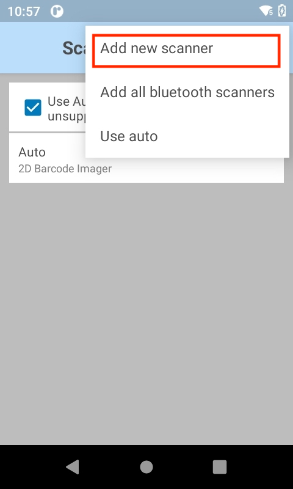 | 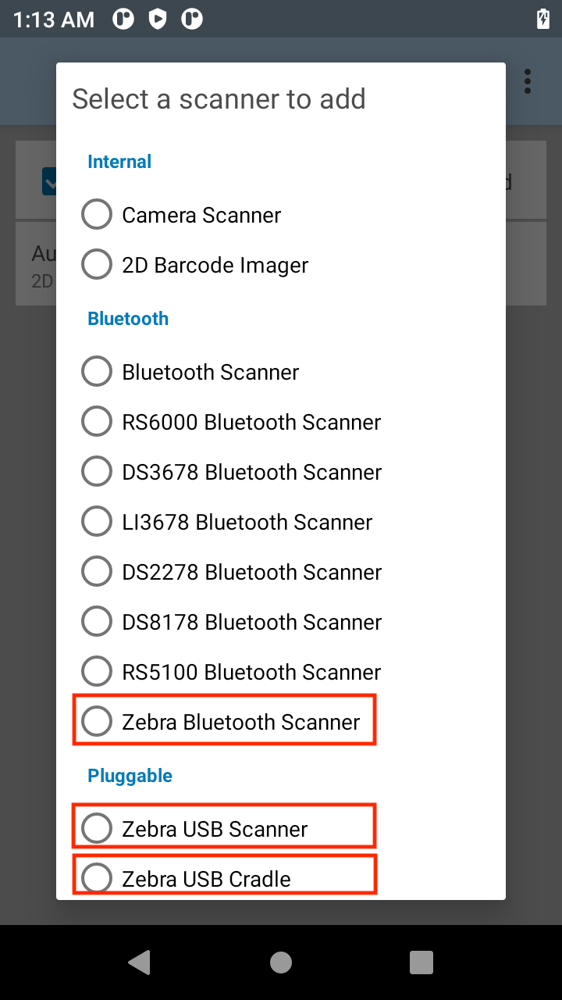 |
スキャナの選択
スキャナ選択のデフォルト設定は [自動] であり、以下の自動スキャナ選択ルールに基づいて、使用可能なデバイスのリストから最適なスキャン デバイスが自動的に決定されます。
- Zebra スキャン モジュールまたはスキャン/MSR モジュールがインストールされている場合は、2D イメージャが選択されます。
- スキャン モジュールがインストールされていない場合は、カメラが選択されます。
- カメラを選択すると、背面カメラを使用してスキャンが実行されます。
- 2D イメージャを選択すると、インストールしたスキャンまたはスキャン/MSR モジュールを使用してスキャンが実行されます。
Zebra Bluetooth スキャナおよび Zebra USB スキャナの汎用スキャナ選択: 新しくリリースされた Zebra Bluetooth スキャナまたは USB スキャナは (SSI モードで) 自動的にサポートされますが、特定のスキャナ モデル名がまだスキャナ選択リストに表示されない場合があります。この場合は、[Zebra Bluetooth スキャナ] または [Zebra USB スキャナ] を選択して、各周辺機器からスキャンする一般的なオプションとして使用できます。表示されるスキャナ モデル名が利用できるかどうかは、オペレーティング システムのビルド (BSP) に依存します。バージョンの互換性については機能マトリックス、最新のビルドをダウンロードするには Zebra サポート ポータルを参照してください。
Zebra USB クレードルは、USB クレードルにペアリング/接続された Bluetooth スキャナをサポートし、Android デバイスが挿入されたワークステーション クレードルに接続します。これにより、Bluetooth スキャナはワークステーション クレードルに挿入された Android デバイスにデータをスキャンできます。
複数のスキャナのサポートにより、内部スキャナと外部 Bluetooth スキャナが必要な場合などで手動構成しなくても、同じ DataWedge プロファイルで複数のスキャナを交互に使用できます。また、同じプロファイル内で各スキャナを個別に構成できます。スキャナを追加するには、[スキャナ選択] 画面で右上のメニューをタップし、[新しいスキャナの追加] を選択します。使用可能なスキャナのリストが表示されます。
| 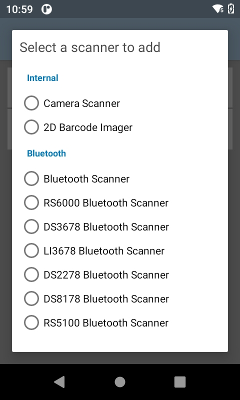 |
新しいスキャナの追加
追加するスキャナをリストから選択します。選択したスキャナが [スキャナ選択] リストに追加されます。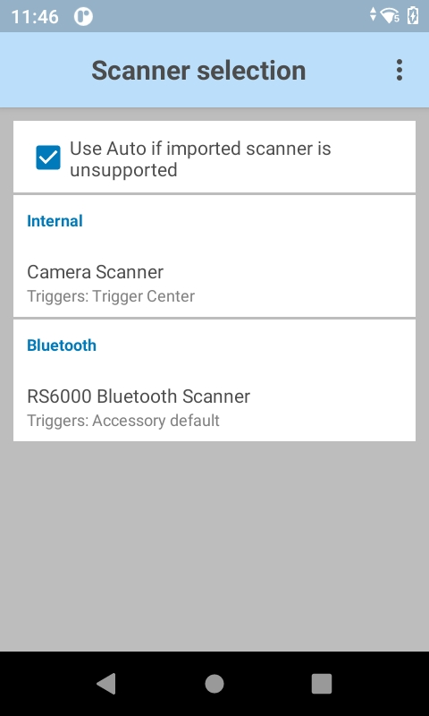選択したスキャナがリストに追加された状態
[スキャナ選択] を [自動] に設定すると、すべてのスキャナがリストから削除されます。
[スキャナ選択] 画面でスキャナ カテゴリを長押しすると、[トリガ構成] または [削除] を選択するオプション メニューが表示されます。[トリガ構成] をタップして、構成するトリガのリストを表示します。表示されるオプションは、使用するデバイスによって異なります。
| 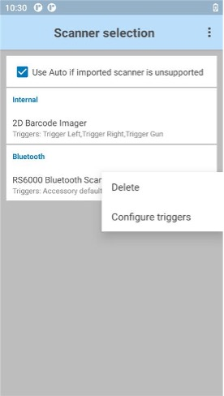 |  |
新しいスキャナの追加
外部スキャナと内部スキャナを選択した場合 (追加された順序に関係なく)、デフォルトですべてのトリガが内部スキャナに割り当てられます。外部スキャナのトリガは、ユーザーが必要に応じてを選択する必要があります。1 つまたは複数のトリガを外部スキャナに割り当てると、そのトリガは、内部スキャナから削除されます。外部スキャナを [スキャナ選択] から削除すると、すべてのトリガが内部スキャナに再び割り当てられます。すでに別のスキャナ カテゴリに割り当てられているトリガを割り当てようとすると、次のメッセージが表示されます。
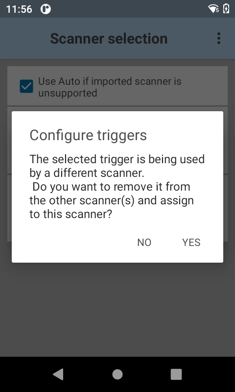 トリガ構成に関する警告
注: 複数の Android ユーザー アカウントで複数のスキャナを使用すると、予期しない動作が発生するおそれがあります。
Bluetooth SSI スキャナ
DataWedge は、以下の Zebra Bluetooth SSI スキャナをサポートしています。
- DS2278 Bluetooth スキャナ
- DS3678 超高耐久性スキャナ
- DS8178 Bluetooth スキャナ
- LI3678 超高耐久性レーザー スキャナ
- RS507 コードレス リング スキャナ
- RS5100 Bluetooth ウェアラブル スキャナ
- RS6000 リング スキャナ
- RS6100 Bluetooth ウェアラブル スキャナ
Bluetooth スキャナは、次のルールに従ってサポートされます。
- プロファイルで RS507 を初期構成するには、スキャナをペアリングして接続する必要があります。
- 初期構成後、Bluetooth スキャナは、デバイスから切断されていても、プロファイルで有効または無効にすることができます。ただし、デコーダ、リーダー パラメータ、およびその他のスキャナの設定を構成するには、Bluetooth スキャナを接続する必要があります。
- 自動選択されたスキャナの使用中に Bluetooth スキャナを接続しても、接続したスキャナに自動的に再接続されることはありません。Bluetooth スキャナを再度有効にするには、スキャナを接続して、プロファイルで選択するか、[自動] 選択オプションを再度選択します。
- 自動選択とバッテリ交換 - [スキャナ選択] が [自動] に設定されており、バッテリ交換の前に RS507 が有効になっていた場合、DataWedge はバッテリ交換後の再接続時にその RS507 スキャナで動作し続けます。バッテリ交換後に RS507 が再接続されない場合、DataWedge は現在のデフォルト スキャナに戻ります。
- サスペンド時に有効状態を維持 - このモードは、Bluetooth スキャナおよびプラグ接続可能なスキャナでサポートされており、サスペンド モード中よりもバッテリの消耗が早まる可能性があります。注: サポートされているスキャナのスキャン トリガを押すと、Zebra コンピューティング デバイスはサスペンド モードからウェイクします。
USB SSI スキャナ
DataWedge は、以下の Zebra USB SSI スキャナをサポートしています。
- DS2208 USB SSI スキャナ
- DS3608 USB SSI スキャナ
- DS4608 USB SSI スキャナ
- DS8108 USB SSI スキャナ
- DS9308 USB SSI スキャナ
- DS9908 USB SSI スキャナ
- LI3608 超高耐久性 USB SSI レーザー スキャナ
- RS4000 USB SSI リング スキャナ
- RS5000 USB SSI リング スキャナ
サポートに関する注記:
- スキャナは、SSI over USB CDC を使用して設定する必要があります。
- スキャナは、ワークステーション ドッキング クレードルまたは USB ポートとケーブルのいずれかを介して接続されます。
重要: デコード パラメータのサポートは、選択したスキャン デバイスによって異なります。デバイス固有のサポートに関する注記については、ユニットに付属のインテグレータ ガイドを参照してください。
USB SSI クレードル
DataWedge は、次の Bluetooth スキャナ付き USB クレードルをサポートし、SSI モードでバーコード スキャンを実行できます。
| クレードル/スキャナ | 最小ファームウェア バージョン |
|---|---|
| STB3678 (クレードル) | PAACNS00-005-R00 |
| CR2278 (クレードル) | PAADNS00-001-R04 |
| CR8178 (クレードル) | PAACYS00-006-R02 |
| DS3678 (スキャナ) | PAACKS00-010-R00 |
| DS2278 (スキャナ) | PAADFS00-002-R05 |
| DS8178 (スキャナ) | PAACXS00-007-R01 |
DataWedge は、サポート対象の USB クレードルに接続するために、次の Zebra Android デバイスをサポートしています (Android デバイスではスキャナ ファームウェア バージョン 32.7.31.0 以降が必要です）。
- EC50/EC55
- ET51/ET56
- L10AW
- TC52AX
- TC52/TC57
- TC52X/TC57X
- VC8300
接続を確立するには、適切なセットアップと構成が必要です。
USB クレードルとスキャナの構成
DataWedge を使用するには、Zebra USB クレードルとスキャナが「SSI over USB CDC」モードになっている必要があります。
次の手順に従います。
Zebra USB クレードルをコンピュータに接続して電源を入れます。
USB クレードルに印刷されているペアリング用バーコードをスキャンして、Bluetooth スキャナをペアリング/接続します。
Bluetooth スキャナを使用して「SSI over USB CDC」バーコードをスキャンします:

Bluetooth スキャナが自動的に再起動します。
これにより、スキャナと USB クレードルの両方が SSI over USB CDC モードになります。
Android デバイスをセットアップして接続します
USB クレードルを使用して Android デバイスを Bluetooth スキャナに接続します。
- サポート対象の Zebra Android デバイスの電源をオンにします。
- USB 接続をサポートし、電源に接続されているワークステーション クレードルにデバイスを挿入します。
- イーサネット ケーブルの一方の端を USB クレードルに挿入します。
- ケーブル （USB） のもう一方の端をワークステーション クレードルに挿入します。USB クレードルの緑色の LED が点灯します。
- USB クレードルに印刷されているペアリング用バーコードをスキャンして、サポート対象の Bluetooth スキャナと USB クレードルをペアリング/接続します。スキャナが USB クレードルに接続されます。
これで、Bluetooth スキャナでスキャンを実行して、結果を Android デバイスに出力できるようになりました。DataWedge の [スキャナ選択] により、Zebra USB クレードルが自動的に選択されます。DWDemo を使用してスキャンする場合は、Bluetooth スキャナのハード トリガ ボタンを押すか、DWDemo アプリケーションのソフト トリガ ボタンを押してスキャンを開始します。
注: 上記の手順は順番どおりに実行してください。Bluetooth スキャナを USB クレードルとペアリング/接続する前にスキャン アプリケーションを開くと、スキャンは機能しません。
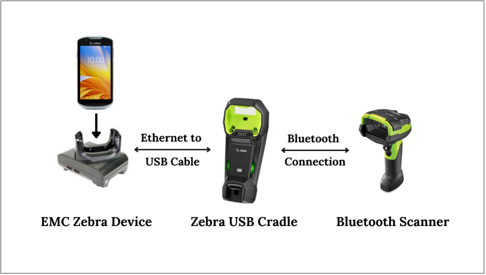
Zebra Android デバイス、USB クレードル、および Bluetooth スキャナを接続することができます。
ハードウェア トリガ
この機能で DataWedge を構成すると、バーコード入力用のデバイス ハードウェア トリガの使用を有効/無効にすることができます。ハードウェア トリガは、デフォルトで有効になっています。無効にすると、ハードウェア トリガを押してもスキャン ビームは照射されません。ただし、ソフト スキャン トリガ DataWedge API インテントを使用してスキャン ビームをアクティブにすることはできます。この機能により、アプリケーション プログラマは、アプリ内でバーコードやドキュメントをスキャンするときに、アプリ固有の機能を強制的に使用させることができます。
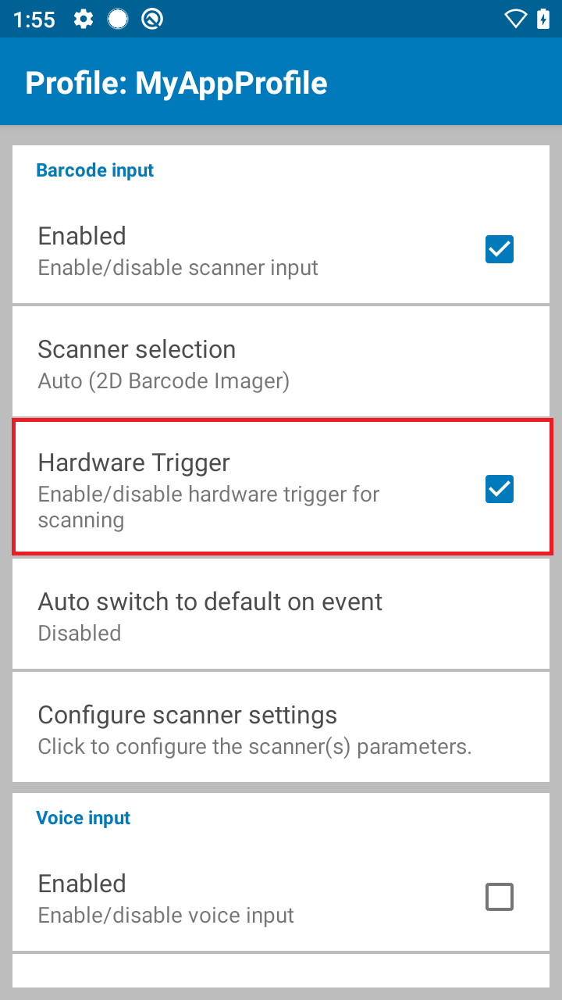
注: ハードウェア トリガが無効になっている場合、スキャン ビームをトリガするためにこのトリガを使用することはできません。ソフト スキャン トリガ API インテントによってスキャンが開始された場合、ハードウェア トリガを押すと、ビームがキャンセルされます。
イベント発生時に自動でデフォルトに切り替え
この機能で DataWedge を構成すると、外部スキャナを接続直後にデフォルトのスキャン デバイスとして選択し、外部スキャナの切断時に内蔵スキャナに戻すことができます。外部スキャナには、Bluetooth、シリアル ケーブル、またはスナップオン モジュールで接続するスキャナが含まれます。この機能を有効にした場合、スキャナの接続/切断時に SWITCH_SCANNER は使用しないでください。予期しない動作が発生するおそれがあります。デフォルトでは無効です。[スキャナ選択] パネルで [自動] が選択されている場合にのみ使用できます。
この機能は、Bluetooth スキャナの導入時や、電源断または通信圏外への移動による Bluetooth スキャナの切断時に、スキャン ワークフローの中断を減らせるようにすることを目的としています。
Bluetooth スキャナでは、デバイスが以前にペアリングされていなかった場合、自動接続の前にペアリング バーコードが表示されます。
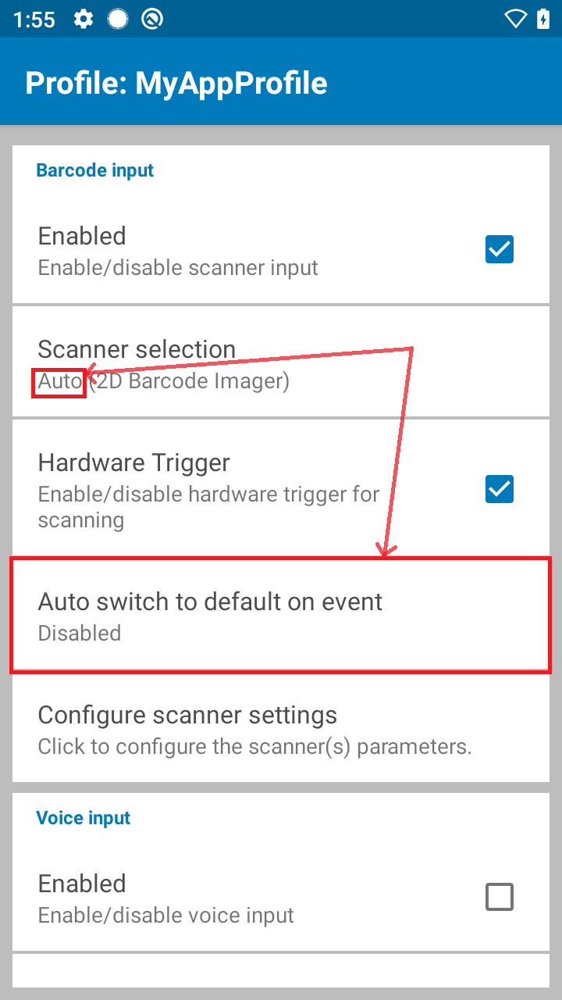
[イベント発生時に自動でデフォルトに切り替え] は、[自動] が選択されている場合にのみ使用可能です。
使用可能なオプション:
- 無効 - 外部スキャナを接続または切断してもスキャナの切り替えは行われません (デフォルト)。
- 接続時 - 接続直後に、外部スキャナをデフォルトのスキャン デバイスとして選択します。
- 切断時 - 内部的に管理されたスキャナ リスト (ホスト デバイスによって異なる) 内の位置に基づいて内蔵スキャナに戻ります。通常は、外部接続の前に最後に使用したスキャナに戻ります (以下の注記を参照)。
- 接続/切断時 - 接続直後に、外部スキャナをデフォルトのスキャン デバイスとして選択します。切断時には、外部接続の前にデフォルトとして設定されていたスキャナに戻ります。
注:
- 接続状態と内部的に管理されたスキャナ リスト内のスキャナの位置に基づいてデフォルト スキャナが自動的に選択されます。新たに接続したスキャナが、デフォルト スキャナとして現在選択されているスキャナよりもスキャナ リスト内の下にある場合、新たに接続したスキャナがデフォルト スキャナになります。
- スキャナまたはイメージャが 1 つしか内蔵されていないデバイスの場合、「切断時」にはその内蔵スキャナまたはイメージャに戻ります。
QR コード起動オプション
QR コード起動オプションは、URL を QR コード バーコードからデコードする際に、デフォルトのブラウザから起動する Web URL を有効または無効にします。この機能をホーム画面から有効にするには、「起動プログラム」DataWedge プロファイルを設定する必要があります。要件:
- [スキャン モード] を [シングル] に設定します。
- QR コードには、「http」または「https」で始まる有効な単一の URL が含まれていて、他のデータは含まれていないことが必要です。
- 選択したスキャナは QR コード スキャンをサポートしている必要があります。サポートしていないと、QR 起動オプションが機能しません。
最初の 2 つの要件が満たされていない場合は、URL を開かずにスキャンされたデータがアプリケーションにディスパッチされます。
| 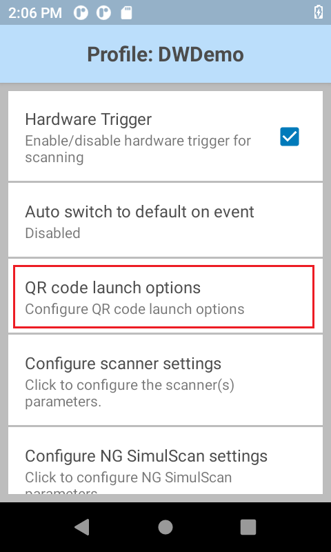 |  |
|
| QR コードを有効にして URL を開きます | QR コード起動オプション |
使用可能なオプション:
QR コードの起動 - QR コードのスキャン時に URL を開く機能を有効または無効 (デフォルト) にするように DataWedge プロファイルを設定します。有効な場合、スキャンされたバーコードは QR コード タイプで、URL を開くにはデフォルト ブラウザの有効な URL を含む必要があります。それ以外の場合は、スキャンされたデータがアプリケーションにディスパッチされます。次のオプションでは、[QR コードの起動] を有効にする必要があります。
QR コード デコーダのみを有効にする - 有効 (デフォルトで無効) の場合、QR コード バーコードのみが読み取られ、有効な URL が含まれている場合は、URL がブラウザで起動されます。プロファイル内で選択されている他のデコーダはすべて無視されます。QR バーコードのみにデコードを制限することで、プロファイルで選択可能な他のデコーダの選択を解除する必要がなくなります。無効にすると、QR コードに加えて他のデコーダもスキャンできますが、有効な URL を持つ QR コードのみがブラウザで URL を起動できます。
URL ポップアップを表示する - 無効にした場合、有効な URL を含む QR コードをスキャンすると、デフォルトのブラウザがただちに起動し、URL が開きます。有効な場合 (デフォルト)、有効な URL を含む QR コードバーコードをスキャンすると、ポップアップが表示され、次の選択に基づいて URL を開くかどうかを決定するようにユーザーに求めます。
• [はい] - デフォルトのブラウザが起動し、URL が開きます。
• [いいえ] - URL は開かず、スキャンされたデータがアプリケーションにディスパッチされます。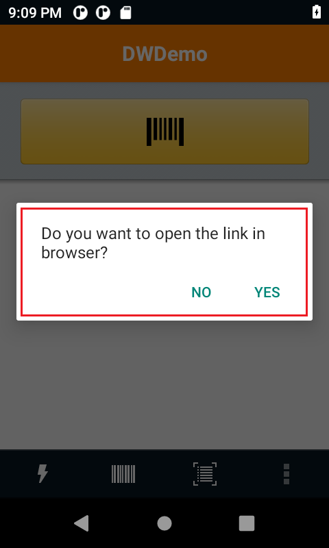
QR コードのポップアップ メッセージ
スキャナ設定の構成
[スキャナ設定の構成] オプションは、DataWedge プロファイル設定を通じてアクセスできます。バーコードのスキャン方法を指定するスキャナ パラメータを構成します。パラメータには、選択したスキャナ (カメラ、2D イメージャ、Bluetooth スキャナなど)、デコーダ、デコーダ パラメータ、リーダー パラメータ、スキャン パラメータなどがあります。詳細については、各オプションに関する以降の対応するセクションを参照してください。
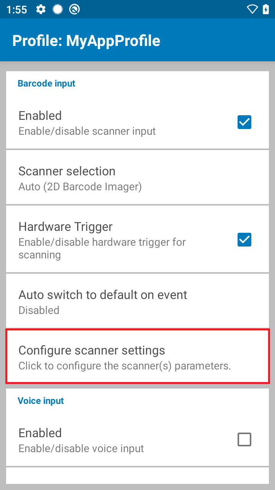 プロファイル設定
[スキャナ設定の構成] をタップします。スキャナ構成設定のリストが表示されます。
 スキャナ構成
スキャナ構成
注: [スキャナ選択] で選択したスキャナが切断されても、[スキャナ設定の構成] オプションには引き続きアクセスできます。バージョン 6.8 より前の DataWedge では、すべてのスキャナ パラメータ (デコーダ、デコーダ パラメータなど) が淡色表示になり、アクセスできませんでした。
スキャン モード
[スキャン モード] は、バーコードをスキャンするモードを選択するのに使用します。
- シングル - 個々のバーコードをスキャンする標準モード
- UDI - GS1、HIBCC、ICCBBA などの機器固有識別子 (UDI) バーコードをスキャンします
- 無効 - [NG SimulScan 構成] 画面で [マルチバーコード] や [ドキュメント キャプチャ] などのスキャン モードが選択されている場合、このセクションのスキャン モードは自動的に無効になり、他を選択できなくなります。
[スキャン モード] は、[スキャナ構成] セクションと [NG SimulScan 構成] セクションの両方に存在します。[スキャン モード] のオプションが使用できるかどうかは、各セクションで選択したオプションによって異なります。
- [スキャナ構成] で [スキャン モード] として [シングル] または [UDI] を選択した場合は、[NG SimulScan 構成] における [スキャン モード] が無効になります。
- [NG SimulScan 構成] で [スキャン モード] に [ドキュメント キャプチャ] または [マルチバーコード] を選択した場合は、[スキャナ構成] における [スキャン モード] が無効になります。
 |
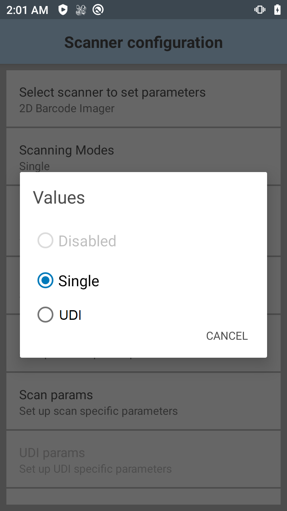 |
[スキャナ構成] - [スキャン モード]
グローバル スキャナ構成
グローバル スキャナ構成 ([すべてのスキャナ]) により、サポートされているすべてのスキャナに適用される汎用スキャナ構成を指定できます。特定の DataWedge プロファイル内で個別のスキャナごとに複数の構成を個別に指定するのではなく、1 つのプロファイルで複数のスキャナを構成できるグローバル構成設定が用意されています。
グローバル スキャナ構成 ([すべてのスキャナ]) には、各スキャナのすべてのスキャナ パラメータと値が表示されます。特定のスキャナでサポートされていないパラメータと値も表示されます。このリストは包括的であるため、特定のパラメータや値が、個々のスキャナでサポートされていない場合があります。このような場合は、スキャン中にエラーが logcat に記録されます。
グローバル スキャナ構成 ([すべてのスキャナ]) が有効になっている場合、[スキャナ選択] (図 1 参照) で内部スキャナとしてデフォルト スキャナが選択されていても、[サスペンド時に有効状態を維持] オプション (具体的には Bluetooth スキャナや他の周辺機器のスキャナに対応) などの、個別のスキャナに特有の設定には引き続きアクセスできます。構成を適用するときに、グローバル設定のいずれかが特定のスキャナに対応していない場合、こうした設定は適用できず、無視されます。
グローバル設定を構成してから個別のスキャナを構成すると、両方の構成オプションが保存されます。構成は、以下の順序で適用されます。
- グローバル構成が適用されます。
- 特定のスキャナ構成が適用されます。
グローバル スキャナ構成を設定したときにレポートが生成された場合は、接続されたデバイスでサポートされている値が返されます。
構成
DataWedge でプロファイルを開きます。[バーコード入力] セクションには、オプション [スキャナ設定の構成] が含まれています。
注: [スキャナ選択] で選択したスキャナが切断されても、[スキャナ設定の構成] オプションには引き続きアクセスできます。バージョン 6.8 より前の DataWedge では、すべてのスキャナ パラメータ (デコーダ、デコーダ パラメータなど) が淡色表示になり、アクセスできませんでした。
プロファイル設定
[スキャナ設定の構成] をタップします。スキャナ構成設定のリストが表示されます。
 スキャナ構成
スキャナ構成
[スキャナを選んでパラメータを設定] をタップします。グローバル スキャナ構成を有効にして、スキャナ設定をすべてのスキャナに適用できるようにする、[すべてのスキャナ] オプションが用意されています。
 グローバル スキャナ構成
グローバル スキャナ構成
[すべてのスキャナ] を選択します。今後のあらゆる設定変更が、共通のグローバル構成としてすべてのスキャナに適用されることを示す確認メッセージが表示されます。既存の個別のスキャナ設定は、このグローバル設定に置き換えられます。グローバル スキャナ構成の設定を構成するために、スキャナをデバイスに接続する必要はありません。
インテントの使用
SET_CONFIG インテント API を使用して、パラメータ configure_all_scanners の値を「true」に設定して、グローバル スキャナ構成を設定します。
NextGen SimulScan 構成
NextGen (NG) SimulScan 構成は、以前に廃止された、DataWedge の従来の SimulScan 入力から移行された構成です。NG SimulScan は、バーコードをスキャンしたり、ドキュメントの一部または全体を画像としてキャプチャしたりすることで、ドキュメント、フォーム、ラベルからデータを取得するためのデータ キャプチャ ソリューションです。従来の SimulScan 機能のすべてが使用できるわけではありません。こうした機能の NextGen SimulScan への移行については、継続的に取り組んでいます。現在、以下の機能が NextGen SimulScan に組み込まれています。
- マルチバーコード - 1 回のスキャン セッションでフォームから複数の一意のバーコードを取得し、即時または特定の要件が満たされた後にデータを配信します。つまり、スキャンされたバーコードの数が、指定されたバーコード数量に達するか、指定されたバーコード数量の範囲内に収まります。オプションはマルチバーコード パラメータ内の DataWedge で直接設定されます。DataWedge 8.0 以降でサポートされています。このマルチバーコード機能にテンプレートは必要ありません (Document Capture の一部である MultiBarcode サブ機能と混同しないでください。後者はテンプレートが必要です) 。次のようなユースケースに適用されます。
- 任意のバーコード、固定バーコード数量 - フォームまたはラベルには同じ数のバーコードがあり、それぞれを区別するための固有の基準はありません。
- 任意のバーコード、可変バーコード数量 - フォームやラベルはバーコードの仕様や数量に従わず、それらの固有の基準も異なることがあります。キャプチャするバーコードの数量の範囲や、ユースケースに適用するタイムアウト値を定義します。
- ドキュメント キャプチャ - バーコードをスキャンしたり、NG SimulScan テンプレート ビルダから作成されたテンプレートに基づいてドキュメントの一部または全体を画像としてキャプチャしたりすることで、ドキュメント、フォーム、ラベルからデータを取得します。サブ機能としてマルチバーコードを含むドキュメント キャプチャには、NextGen SimulScan テンプレート (ドキュメント キャプチャ テンプレートとも呼ばれます) が必要です。 (このマルチバーコードサブ機能は、テンプレートに依存しない、前述の箇条書きのマルチバーコード機能と混同しないでください) 適切な設定でテンプレートを作成した後、DataWedge にインポートされます。DataWedge 8.0 以降でサポートされており、一部のデバイスおよびスキャナでのみ使用できます。「機能マトリックス」を参照してください。MultiBarcode サブ機能は、以下のユースケースに適用されます。
- 特定のバーコード、固定フィールドの有無 - 各ラベルやフォームに特定のタイプのバーコードが存在します。テンプレートを使用して、特定のバーコードをキャプチャするための一意の基準を定義します。
- 特定のバーコード、可変フィールドの有無 - 特定のバーコードは一意に定義できますが、その有無はラベルごとに異なる場合があります。フィールドが「必須」かどうかをテンプレートで定義します。フィールドが存在しない場合、デコードは行われません。
- 自動グループ識別 - バーコードが共通のパターン (シンボル体系、開始文字、またはデータ長に基づく) を共有する場合に適用されます。このパターンが検出された時に、デコードされたデータは自動的にグループ化されます。バーコードの数量を明示的に定義する必要があります。
TC21 や TC26 などの Zebra Professional シリーズのデバイスの場合、NextGen SimulScan を使用するには、Mobility DNA Enterprise ライセンスが必要です。有効なライセンスがないデバイスでこの機能にアクセスしようとすると、次のメッセージが表示されます。
 Zebra Professional デバイスではライセンスが必要
Zebra Professional デバイスではライセンスが必要
詳細については、「DataWedge ライセンス」を参照してください。
NextGen SimulScan 構成にアクセスするには:
DataWedge プロファイルで、[NG SimulScan 設定の構成] をタップします。
 NG SimulScan が表示された DataWedge プロファイル
NG SimulScan が表示された DataWedge プロファイル[スキャナ設定の構成] と同様のオプションの [NG SimulScan 構成] 画面が表示されます。
 NextGen (NG) SimulScan 構成
NextGen (NG) SimulScan 構成
[スキャン モード]、[ドキュメント選択]、および [マルチバーコード パラメータ] を除く他のすべてのオプションは、[スキャナ設定の構成] に表示されるオプションと同じです。詳細については、各 NG SimulScan 構成オプションに関する以降の対応するセクションを参照してください。
スキャン モード
[スキャン モード] は、バーコードをスキャンするモードを選択します。
- マルチバーコード - 1 回のスキャンで複数のバーコードを読み取ります。テンプレートは必要ありません。
- ドキュメント キャプチャ - ドキュメント内のフィールドをキャプチャ、またはNG SimulScan テンプレート ビルダから作成されたテンプレートに基づいてドキュメント全体を画像としてキャプチャします。この機能のサポートは、ハードウェアとオペレーティング システムのバージョンによって異なります。詳細については、機能マトリックスの表を参照してください。
- 無効 - [スキャナ構成] セクションで [シングル] または [UDI] などのスキャン モードを選択した場合は、[NG SimulScan 構成] におけるスキャン モードが自動的に無効になり、他を選択できなくなります。
[スキャン モード] は、[スキャナ構成] セクションと [NG SimulScan 構成] セクションの両方に存在します。[スキャン モード] のオプションが使用できるかどうかは、各セクションで選択したオプションによって異なります。
- [スキャナ構成] で [スキャン モード] として [シングル] または [UDI] を選択した場合は、[NG SimulScan 構成] における [スキャン モード] が無効になります。
- [NG SimulScan 構成] で [スキャン モード] に [ドキュメント キャプチャ] または [マルチバーコード] を選択した場合は、[スキャナ構成] における [スキャン モード] が無効になります。
 |
 |
NextGen (NG) SimulScan - スキャン モード
ドキュメント選択/ドキュメント キャプチャ
[ドキュメント選択] では、バーコードをスキャンしたり、ドキュメントの一部または全体を画像としてキャプチャしたりすることで、ドキュメント、フォーム、ラベルからデータを取得するドキュメント キャプチャに使用するテンプレートを指定します。テンプレートは NG SimulScan テンプレート ビルダから生成され、取得したデータを処理してアプリケーションで使用できるようにします。スキャン モードとしてドキュメント キャプチャを選択する必要があります。ドキュメント キャプチャ テンプレートには、次の 2 種類があります。
- イメージ キャプチャ - ドキュメントまたはフォーム全体のイメージをキャプチャします。また、バーコードや写真などのフォーム内の要素をキャプチャし、同じセッションで署名を検出することもできます。
- マルチバーコード - バーコードを含むフォームからデータを取得します。複数のバーコードを同時に読み取る必要がある場合、または多数のバーコードから特定のバーコードを読み取る必要がある場合に適用されます。バーコードの数量または有無がラベルごとに変更された場合でも、キャプチャされるバーコードには、バーコード (バーコード基準が定義されていない)、明確に定義されたバーコード (一意の基準に基づいて定義されている)、および共通バーコードのグループ (定義された基準に基づいてバーコードで検出された共有パターン) が含まれます。
ドキュメント キャプチャを使用してフォームからデータを取得する方法については、『ドキュメント キャプチャ プログラマ ガイド』を参照してください。
ドキュメント キャプチャ/NextGen SimulScan テンプレートの作成方法については、「テンプレート ビルダ」を参照してください。テンプレートを作成したら、デバイスにコピーします。
ドキュメント キャプチャ/NextGen SimulScan テンプレートを選択するには、[NG SimulScan 構成] 画面で [ドキュメント選択] をタップし、キャプチャするドキュメントのテンプレートを選択します (下のスクリーン キャプチャを参照)。この選択は、テンプレートのインポート後に入力されます。ドキュメント キャプチャを使用する場合は、コンテンツ プロバイダを使用してスキャン データを取得する必要があります。
 |
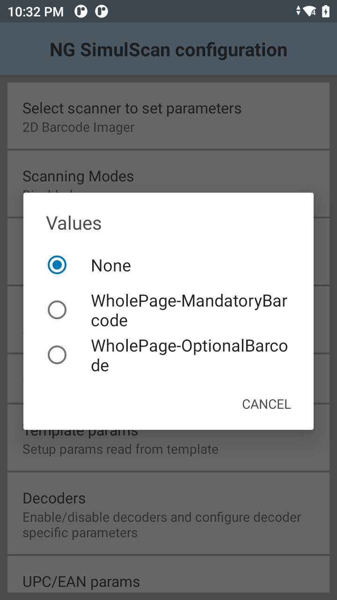 | |
| ドキュメント キャプチャ テンプレートの選択 | ドキュメント全体に関連するデフォルト テンプレート |
次のサブセクションでは、定義されたテンプレートに基づいて、いくつかの異なるタイプのドキュメント キャプチャ テンプレート オプションについて説明します。
A) アンカー バーコード
アンカー バーコードを使用したドキュメント キャプチャでは、キャプチャするフィールドの位置を決定する NG SimulScan テンプレートのバーコードに基づいて、住所や署名などのドキュメント内のフィールドを画像としてキャプチャします。イメージ キャプチャ テンプレート タイプに適用されます。適切に構成したら、アンカー バーコードをスキャンして特定の領域を画像としてキャプチャします。ドキュメント内のさまざまなフィールドを個別の画像にキャプチャすることができます。この機能は、配送作業などで、配送フォームの住所と署名を配達証明用の個別の画像としてキャプチャする場合に便利です。
アンカー バーコードを使用したドキュメント キャプチャのデモンストレーション
B) ドキュメント全体
ドキュメント全体のキャプチャでは、NG SimulScan テンプレート ビルダで定義されたコンテンツの周囲の境界に基づいて、ドキュメント全体、またはフォームが画像として取得されます。イメージ キャプチャ テンプレート タイプに適用されます。バーコードをスキャンするかどうかを問わず、ドキュメント全体をキャプチャできます。ドキュメントには、4 辺すべてを囲む黒色の境界線があるか、対照的な背景で縁取られている必要があり、この要件が満たされていない場合は、ドキュメントをキャプチャできません。
デフォルトでは、次の 2 つのテンプレートを使用できます。
- WholePage-MandatoryBarcode - バーコードが少なくとも 1 つ存在するフォームまたは文書をキャプチャするために使用します。フォームまたは文書内でのバーコードの場所は問いません。
- WholePage-OptionalBarcode - バーコードの有無にかかわらず、フォームや文書をキャプチャするために使用します。バーコードが存在する場合、フォームまたは文書内での場所は問いません。DataWedge によって検出されるとすぐに文書がスキャンされるため、スキャンされた画像がぼやけて表示されることがあります。画質を向上させるには、[リーダー パラメータ] セクションで [エイム タイプ] を [押して持続] に変更します。
ドキュメント全体のキャプチャのデモンストレーション
C) 署名有無の検出
ドキュメント キャプチャを使用してドキュメントをスキャンするときに、手書きの署名があるかどうかを検出します。この機能は、配送サービスや宅配便サービスが、署名が欠落しているかどうかを手動でチェックするのではなく、自動的にチェックする場合に特に便利です。NG SimulScan テンプレートは、署名の場所を識別してその存在を検出するために使用するフォーム上の領域を指定するために必要です。イメージ キャプチャ テンプレート タイプに適用されます。署名有無の検出は、コンテンツ プロバイダを通じて制御されます。詳細については、「コンテンツ プロバイダの使用」プログラマ ガイドを参照してください。
署名有無の検出のデモンストレーション
D) 特定バーコードの読み取り
特定バーコードの読み取りは、NG SimulScan テンプレートで定義された独自の基準に基づいて、多数のバーコードの中から特定のバーコードをデコードします。(ドキュメント キャプチャの一部として) マルチバーコード テンプレート タイプに適用されます。バーコードを読み取るための条件は、NextGen SimulScan テンプレートで定義されています。テンプレートの作成方法の詳細と手順については、「テンプレート ビルダ」を参照してください。特定のバーコードを読み取る基準は、テンプレートの作成時に選択した以下のオプションに基づいています。これらのオプションは任意の組み合わせで使用できます。指定した条件に一致するバーコードが複数存在する場合は、代わりに次のセクションで説明する自動グループ識別オプションを使用できます。
バーコード タイプ - テンプレートで定義されたとおりにバーコード タイプまたはデコーダを指定します。
文字チェック (開始文字) - テンプレートで定義されたとおりに、デコードするには、バーコードの開始文字である特定の文字を指定します。一般的な仕様の例:
○ N - (例: NXXXXXX) 案内状番号の場合
○ P - (例: PXXXXXX) 部品番号の場合
○ Q - (例: QXXXXXX) 数量の場合
○ V - (例: VXXXXXX) ベンダー ID の場合文字チェック (文字列の特定の位置に文字を含む) - テンプレートで定義されたとおりに、バーコードに含まれている必要があるデコード対象文字列内の特定の位置にある文字を指定します。
バーコード データ長 - テンプレートで定義されたとおりに、デコードするバーコード文字列の長さを指定します。
複数文字チェック (開始文字) - テンプレートで指定されたとおりに、バーコード文字列の開始文字として許容可能な文字を指定します。たとえば、「A」と「B」を指定した場合、「A」または「B」で始まるバーコードのみがデコードされます。
固定フィールドの有無 (必須バーコード) – テンプレートに指定された通り、デコードが必要なバーコードを必ず含むフォームに適用されます必須のバーコードが存在しない場合、デコードは行われません。これは、すべてのフォームに共通の基準があり、各バーコード (必須) がフォームごとに存在する場合に適用されます。共通基準はテンプレートで指定され、バーコードの種類や文字のチェック (「で始まる」や文字数など) を含みます。指定された基準を満たすバーコードが複数ある場合、最初にデコードされたバーコードが返されます。
NG SimulScan テンプレート: 特定バーコード - 固定フィールドの有無 NG SimulScan: 特定バーコード - 固定フィールドの有無のデモンストレーション
可変フィールドの有無 (必須バーコード + オプション バーコード) – デコードする必須バーコードとオプション バーコードの組み合わせが含まれているフォームに適用されます。必須バーコードはすべてのラベルで共通の基準を共有し、各必須バーコードはラベルごとに存在します。共通基準はテンプレートで指定され、バーコードの種類や文字のチェック (「で始まる」や文字数など) を含みます。バーコードは必須として指定でき、特定のバーコードがスキャンされないと、スキャンセッションはタイムアウトします。また、オプション (非必須) として指定すると、特定のバーコードがスキャンされなくてもスキャン セッションは続行されます。
- 必須バーコードが存在する場合、バーコードは読み取られます。オプションのバーコードも存在する場合、両方のバーコードが読み取られます。
- 必須バーコードが存在しない場合、スキャンセッションはタイムアウトし、バーコードは読み取られません。
NG SimulScan テンプレート: 特定のバーコード - 可変フィールドの有無 NG SimulScane: 特定のバーコード - 可変フィールドの有無のデモンストレーション
E) 自動グループ識別
自動グループ識別は、共通パターンを共有するドキュメントまたはラベルのバーコードを処理し、パターンが検出されると、読み取ったデータを自動的にグループ化します。一般的な使用事例には、製品のバルク パックのシリアル番号のスキャンなどがあります。この場合、シリアル番号識別子とバルク パック内のアイテム数がラベルごとに変更されます。(ドキュメント キャプチャの一部として) マルチバーコード テンプレート タイプに適用されます。DataWedgeは、NG SimulScan テンプレートで定義された次の基準に基づいて各バーコード データ内のパターンを検索し、グループに属するバーコードを識別します。すべての基準が満たされなければならず、テンプレートの作成方法や詳細な情報については テンプレート ビルダ を参照してください。
- バーコード シンボル体系が同じ
- バーコード データの最初の 1 ～ 2 文字が同じ
- バーコード データ長が同じ
特定のバーコードの読み取りと自動グループ識別機能の紹介
このオプションを使用する場合、数量の定義方法に基づいて、次のいずれかの方法を使用してバーコードの数量を指定する必要があります。「数量」バーコードが存在する場合 (数量バーコード)、またはユーザーまたはシステムによって指定された場合 (ユーザー/システム定義):
- 数量バーコード - テンプレートに基づいて、フォームまたはラベルに、各デコード セッションでスキャンするバーコードの数を指定する個別のバーコードが表示されます。数量バーコードからデコードされたデータは、次の基準を少なくとも 1 つ満たす必要があります。
- "Q" または "q" で始まる
- 長さは 3 桁以下
- ユーザー/システム定義 - バーコードの数 (値の範囲: 1 ～ 100。デフォルト値: 5) を設定し、以下に基づいてスキャンします。
- DataWedge UI - 下の図に示すように、NG SimulScan 構成から、テンプレート パラメータの下にある [ユーザー定義バーコード数量] オプションを使用します。
- DataWedge インテント API - 構成の設定を使用して、
common_barcode_dynamic_quantityを目的の数量に設定します。
| 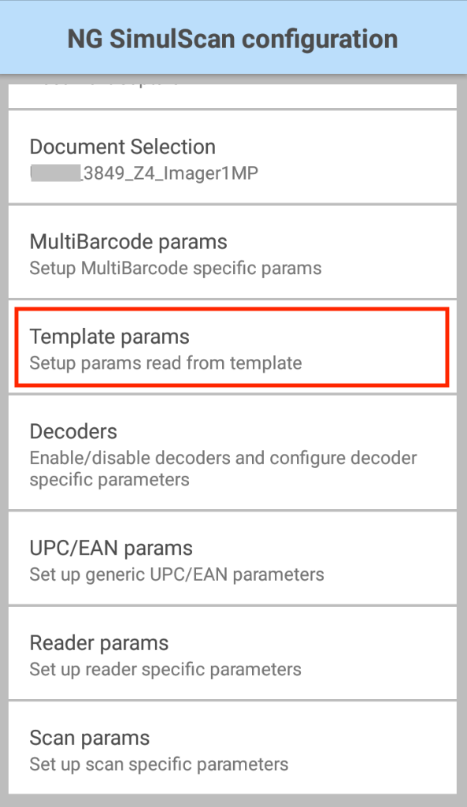 | 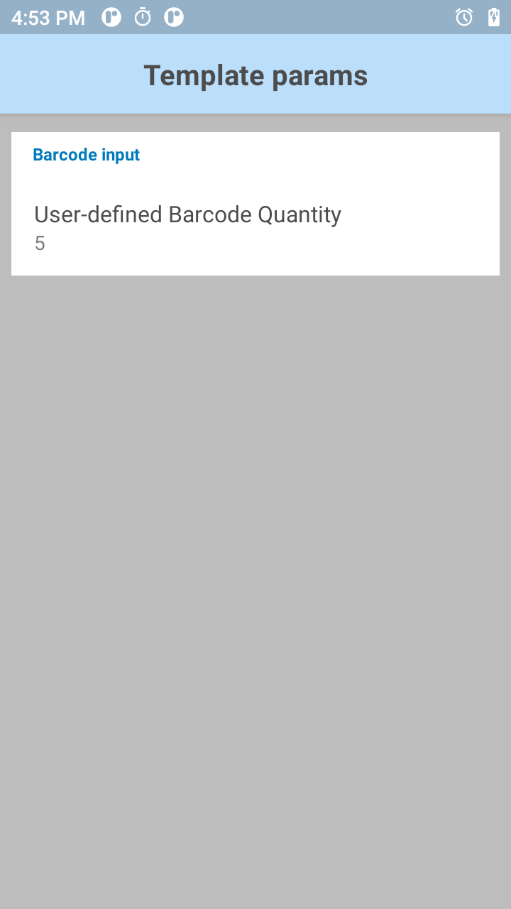 |
自動グループ識別のバーコード数量を設定する
| NG SimulScan テンプレート: 自動グループ識別 | NG SimulScan: 自動グループ識別デモンストレーション |
マルチバーコード パラメータ
マルチバーコードは、1 回のスキャン セッションでフォームから複数の一意のバーコードを取得し、特定の要件を満たすとすぐに、またはその後にデータを配信します。特定の要件とは、スキャンされたバーコードの数が指定された数量に到達するか、指定された数量の範囲内に収まることを指します。重複したバーコードは 1 回だけ読み取られます。NG SimulScan テンプレートは必要ありません 。 (これは、ドキュメント キャプチャのサブ機能で、NG SimulScan テンプレートが必要な MultiBarcode と混同しないでください。)マルチバーコード NG SimulScan 構成内でのスキャン モードモードとして選択する必要があります。
| 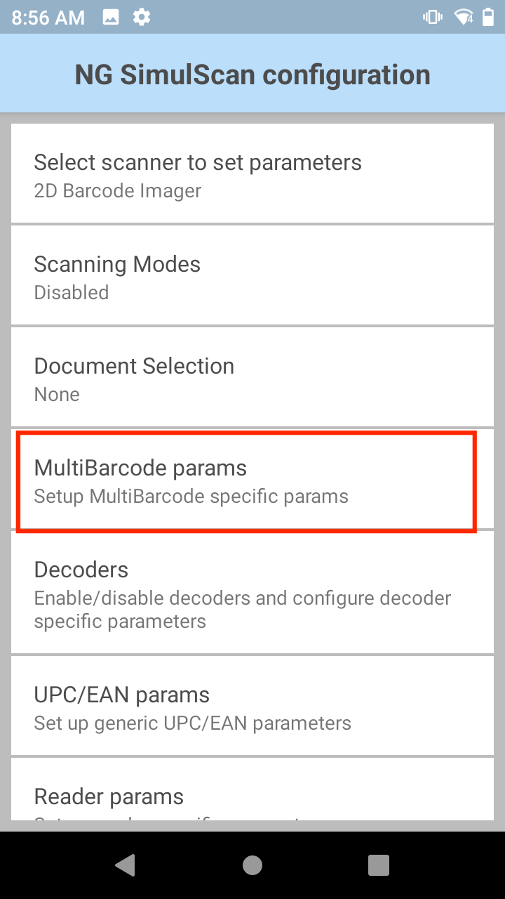 | 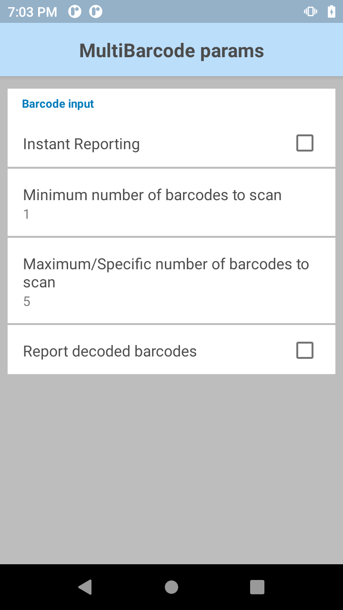 |
マルチバーコード パラメータ
マルチバーコード パラメータを構成する方法:
即時レポート - スキャン セッション中の一意のバーコードの即時報告を有効/無効にします。各バーコードがデコードされるたびに、フィードバックが提供され、デコード データは個別に報告されます。ユーザーはスキャンを開始するためにトリガを押し続け、スキャンを停止するためにトリガを放す必要があります。これは、同じスキャン セッションで複数のバーコードのスキャンに遅延が発生する可能性があるワークフローに適用されます。[即時レポート] を使用すると、 パレットの周りを歩くときなど、スキャン ミスにつながる可能性のあるタイムアウトがありません。重複するバーコードは無視されます。バーコード セパレータがマルチバーコード用に出力 (IP 出力またはキーストローク出力を使用) に指定されている場合、これらのセパレータは追加されません。バーコードは設計上、一度に 1 つずつ出力されるためです。
- 有効にすると、[スキャンあたりのバーコードの最大数/特定数] の値が無視され、スキャンしたデータがただちに報告されます。[即時レポート] は [デコードしたバーコードを報告] を上書きします。
- 無効 (デフォルト) にすると、[スキャンあたりのバーコードの最大数/特定数] に指定されている数に達した後、デコードされたデータが単一のエンティティとして返されます。
NG SimulScan: 即時レポートの構成 NG SimulScan: 即時レポートのデモンストレーション
スキャンあたりのバーコードの最小数 - [デコードしたバーコードを報告] が有効になっている場合、1 回のスキャン セッションでスキャンするバーコードの数の下限を表します。バーコードのデータは、スキャンしたバーコードの数が、[スキャンするバーコードの最小数] と [スキャンするバーコードの最大数/特定数] の範囲内にある場合のみデコードされます。内蔵イメージャにのみ適用され、外部スキャナ (RS5100 リング スキャナなど) には適用されません。
スキャンするバーコードの最大数/特定数 - 内蔵イメージャにのみ適用され、外部スキャナ (RS5100 リング スキャナなど) には適用されません。
- 可変バーコード数量 - スキャンされたバーコードの数が指定された最小値と最大値の範囲内である場合にバーコードをデコードします。これは、バーコードがラベルごとに異なる場合に適用されます。ラベルは、異なるバーコード識別子を使用する異なるメーカーのラベルなど、仕様やバーコードの特定の数量に従っていません。[デコードしたバーコードを報告] を有効にする必要があります。スキャンしたバーコードの数が[スキャンするバーコードの最小数] と [スキャンするバーコードの最大数] の範囲内である場合のみ、バーコード データがデコードされます。上限は 100 です。
NG SimulScan: 可変バーコード数量の設定 NG SimulScan: 可変バーコード数量のデモンストレーション - 固定バーコード数量 - スキャンしたバーコードの数が指定された数に達したときにバーコードをデコードします。これは、ラベル間で同じ数のバーコードが予想され、各バーコードを区別するための固有の基準が存在しない場合に適用されます。スキャンごとの特定数のバーコードは、1 回のスキャン セッションでデコードする特定の数のバーコードを表します。[デコードしたバーコードを報告] を無効にする必要がありますデータは、指定した数のバーコードが読み取られた後にのみ返されます。指定した数のバーコードが、スキャン開始時にスキャナの読み取り範囲内にない場合、スキャナはデータを読み取りません。スキャナの読み取り範囲内に、指定された数量よりも多くのバーコードが含まれている場合、スキャナは指定された数に達するまで、デコードされた順序で (ランダムに) デコードされたデータを返します。たとえば、数量を 2 に設定し、読み取り範囲内に 8 つのバーコードがある場合、スキャナは最初に読み取る 2 つの一意のバーコードをデコードし、そのデータをランダムな順番で返します。読み取り範囲にあるバーコードが 2 つ未満の場合、タイムアウトが発生します。
NG SImulscan: 固定バーコード数量の設定 NG Simulscan: 固定バーコード数量のデモンストレーション
- 可変バーコード数量 - スキャンされたバーコードの数が指定された最小値と最大値の範囲内である場合にバーコードをデコードします。これは、バーコードがラベルごとに異なる場合に適用されます。ラベルは、異なるバーコード識別子を使用する異なるメーカーのラベルなど、仕様やバーコードの特定の数量に従っていません。[デコードしたバーコードを報告] を有効にする必要があります。スキャンしたバーコードの数が[スキャンするバーコードの最小数] と [スキャンするバーコードの最大数] の範囲内である場合のみ、バーコード データがデコードされます。上限は 100 です。
デコードしたバーコードを報告 - [スキャンあたりのバーコードの最大数/特定数] に指定されている数に関係なく、1 回のスキャン セッションでデコードされたバーコード データのレポートを許可します。
- 無効 (デフォルト) にすると、[スキャンあたりのバーコードの最大数/特定数] に指定されている数に達した後でのみ、デコードされたデータが単一のエンティティとして返されます。
- 有効にすると、デコードされたバーコードは、スキャンしたバーコードの数が、[スキャンするバーコードの最小数] と [スキャンするバーコードの最大数/特定数] の範囲内にある場合のみ単一のエンティティとして報告されます。[デコードしたバーコードを報告] が有効になっている場合は、以下の動作を考慮してください。
- [連続読み取り] も有効になっている場合、バーコードの連続読み取りは機能しません。
- [即時レポート] も有効になっている場合は、[即時レポート] の優先順位が高くなります。
NG SimulScan: デコードしたバーコードの報告の設定 NG SimulScan: デコードしたバーコードの報告のデモンストレーション
マルチバーコードに関する注記:
- キーストロークとして出力する場合は、すべてのバーコードから取得したデータが、単一文字列として配信されます。セパレータの追加と出力順序の調整については、「キーストローク出力」ガイドを参照してください。
- マルチバーコードは、64KB の最大データ サイズをサポートしています。
- 選択リストの動作 - [選択リスト] パラメータが [無効] に設定されている場合、デバイスは [マルチバーコード パラメータ] 画面に指定されている数のバーコードのスキャンを試行します。[選択リスト] パラメータが [無効] 以外の値に設定されている場合は、ユーザーが、スキャンする各バーコードに十字線を移動する必要があります。データは、指定した数のバーコードが読み取られた後にのみ返されます。
- 複数のバーコード タイプ - 同じスキャン セッションで複数のバーコード タイプ (デコーダ) を取得できます。たとえば、マルチバーコード スキャンの指定数量が 4 の場合、2 つのバーコードはバーコード タイプ Code 128 に、もう 2 つはラベル タイプ Code 39 にすることができます。
- [連続読み取り] パラメータと [即時レポート] パラメータの両方が有効になっている場合は、[即時レポート] が [連続読み取り] よりも優先され、[連続読み取り] は無視されます。
- 特定の基準 (例: バーコードの最小数/最大数) を満たす前に、スキャン セッション中にビーム タイマが期限切れになった場合、スキャンされたデータは報告されません。
バーコードのハイライト
バーコードのハイライトでは、定義されたルールに基づいてバーコードを強調表示することで、カメラまたはイメージャでスキャンするときに画面上のフィードバックが得られます。バーコードを強調表示するルールを作成し、報告するバーコードを指定します。この機能は、どのバーコードがキャプチャされているかの識別、またはアイテムの検索に役立ちます。バーコードのハイライトを機能させるには、バーコード入力を有効にする必要があります。
バーコードのハイライトの紹介との使用方法のデモ ビデオ
 |
 |
|
| バーコード データと適用されたルールに 基づいて強調表示された バーコードの例 |
バーコードのハイライトを有効にします |
バーコードのハイライト パラメータ:
- バーコードのハイライトのルール - 作成されたルールから指定された条件とアクションに基づいてバーコードを強調表示します。強調表示にのみ適用されます。デコードのルールは、[レポート データ ルール] オプションで指定します。
- レポート データ ルール - 作成されたルールから指定された条件とアクションに基づいてバーコードを読み取ります。
アプリ内にバーコードのハイライトを実装するためのガイダンスについては、『Barcode Highlighting Programmer's Guide』を参照してください。
バーコード ハイライト ルール
バーコード ハイライト ルールは、プレビュー画面に表示されるバーコードを強調表示する条件とアクションを指定します。使用可能なオプション:
- 条件 - ルールを適用する条件を定義します。少なくとも 1 つの条件を定義する必要があります。定義しないと、すべてのバーコードが強調表示されます。
- 識別子:
• 最小長 - スキャンされたバーコードの最小長を指定します
• 最大長 - スキャンされたバーコードの最大長を指定します
• 含有文字列 - スキャンされたバーコードには指定された文字が含まれる必要があります
• 大文字と小文字の区別を無視 - 有効にすると、スキャンされたデータは大文字と小文字を区別せず、[含有文字列] フィールドの文字列の大文字と小文字の区別に一致する必要はありません。無効にすると、スキャンされたデータで大文字と小文字が区別され、大文字と小文字が [含有文字列] フィールドの文字と一致する必要があります。 - [シンボル体系] - スキャンするバーコードのシンボル体系を選択します
- 識別子:
- [アクション] - 条件が満たされたときに実行するアクションを定義します。
- [塗りつぶしの色] - スキャンしたバーコードを強調表示するために使用する色を選択します
バーコード ハイライト ルールを作成するには:
[バーコード入力] と [バーコードのハイライト] を有効にします。
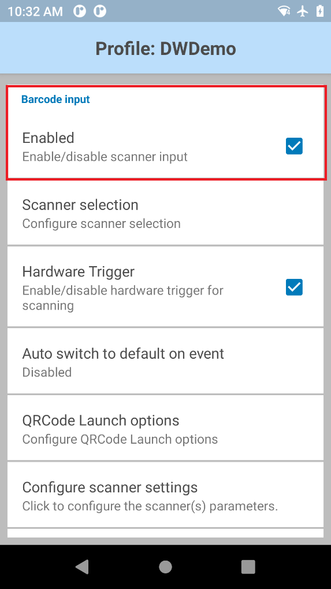 [バーコードのハイライト] の横にある省略記号 (...) をタップして、バーコードのハイライト パラメータを開きます。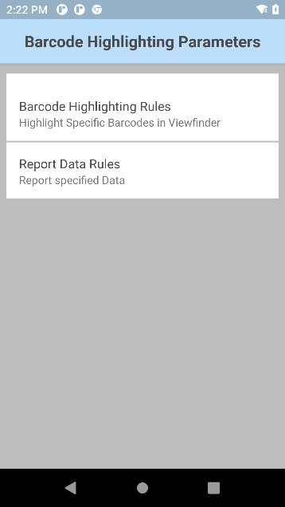
[バーコード ハイライト ルール] をタップします。
右上にあるハンバーガーアイコンをタップし、[新規ルール] をタップします。

新規ルールの名前を入力します。

[OK] をタップします。新規ルールが表示されます:

ルールをタップします。
[条件] をタップして、ルールを有効にする条件を指定します。

[識別子] をタップします。

必要に応じて適切な設定を指定します。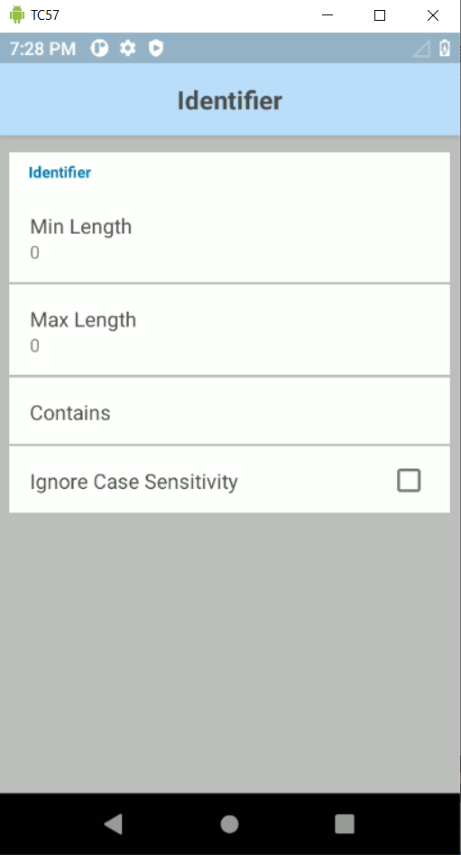
戻るボタンをタップします。
[シンボル体系] をタップします。 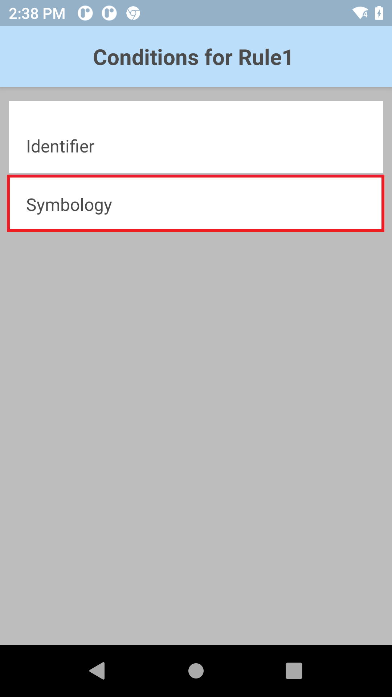
スキャンするシンボル体系を選択します。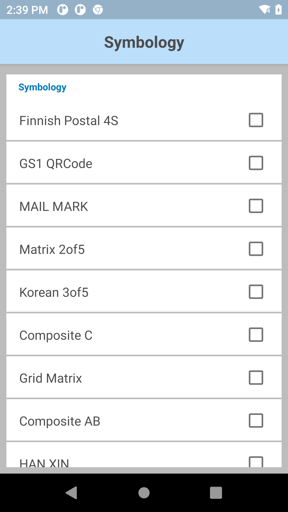
画面にルールが表示されるまで戻るをタップします。
[アクション] をタップします。

右上にあるハンバーガーアイコンをタップし、[新規アクション] をタップします。 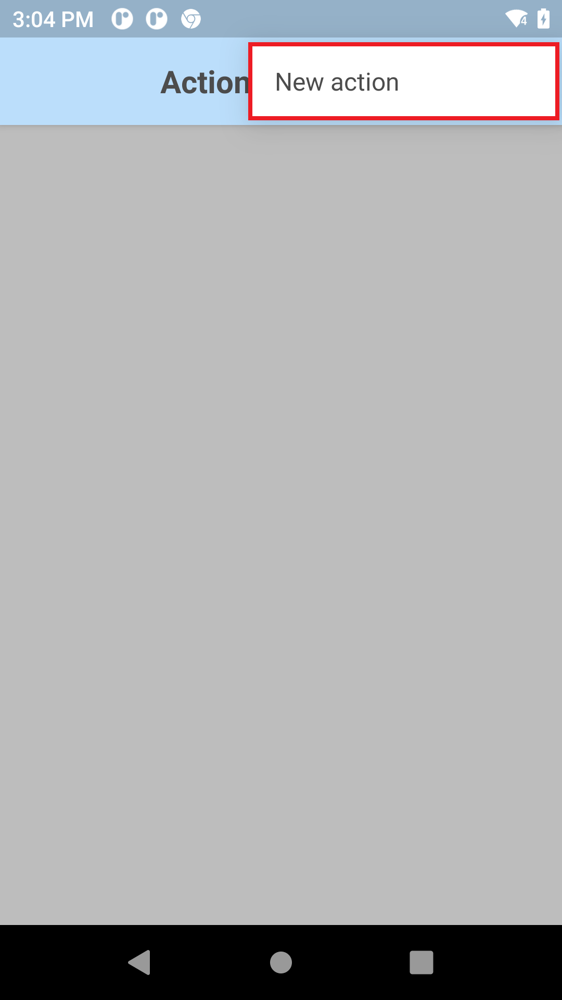
作成する新しいアクションを選択するには、[塗りつぶしの色] をタップします。

新規アクションがリストされます。[塗りつぶしの色] をタップします。 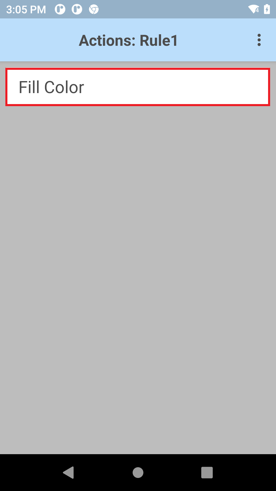
目的の色を選択し、スライドバーで必要に応じて透過設定を調整します。

[OK] をタップします。
選択した色が [塗りつぶしの色] ルールのプレビューに表示されます。

レポート データ ルール
レポート データ ルールは、強調表示されているバーコードを読み取る条件とアクションを指定します。使用可能なオプション:
- 条件 - ルールを適用する条件を定義します。
- 識別子:
• 最小長 - スキャンされたバーコードの最小長を指定します
• 最大長 - スキャンされたバーコードの最大長を指定します
• 含有文字列 - スキャンされたバーコードには指定された文字が含まれる必要があります
• 大文字と小文字の区別を無視 - 有効にすると、スキャンされたデータは大文字と小文字を区別せず、[含有文字列] フィールドの文字列の大文字と小文字の区別に一致する必要はありません。無効にすると、スキャンされたデータで大文字と小文字が区別され、大文字と小文字が [含有文字列] フィールドの文字と一致する必要があります。 - [シンボル体系] - スキャンするバーコードのシンボル体系を選択します
- 識別子:
- [アクション] - 条件が満たされたときに実行するアクションを定義します。
- レポート - 指定した条件に基づいてバーコードを読み取ります
レポート データ ルールを作成するには:
- [バーコード入力] と [バーコードのハイライト] を有効にします。
|
[バーコードのハイライト] の横にある省略記号 (...) をタップして、バーコードのハイライト パラメータを開きます。
[レポート データ ルール] をタップします。
右上にあるハンバーガーアイコンをタップし、[新規ルール] をタップします。
新規ルールの名前を入力します。
[OK] をタップします。新規ルールが表示されます:
ルールをタップします。
[条件] をタップして、ルールを有効にする条件を指定します。
[識別子] をタップします。
必要に応じて適切な設定を指定します。
戻るボタンをタップします。
[シンボル体系] をタップします。
スキャンするシンボル体系を選択します。
画面にルールが表示されるまで戻るをタップします。
[アクション] をタップします。
右上にあるハンバーガーアイコンをタップし、[新規アクション] をタップします。
[レポート] をタップして、指定した条件に基づいてバーコードを読み取ります。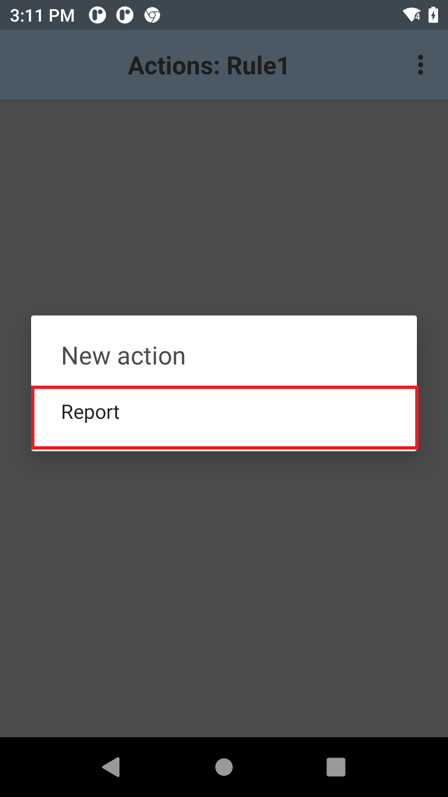
レポート アクションがリストされます。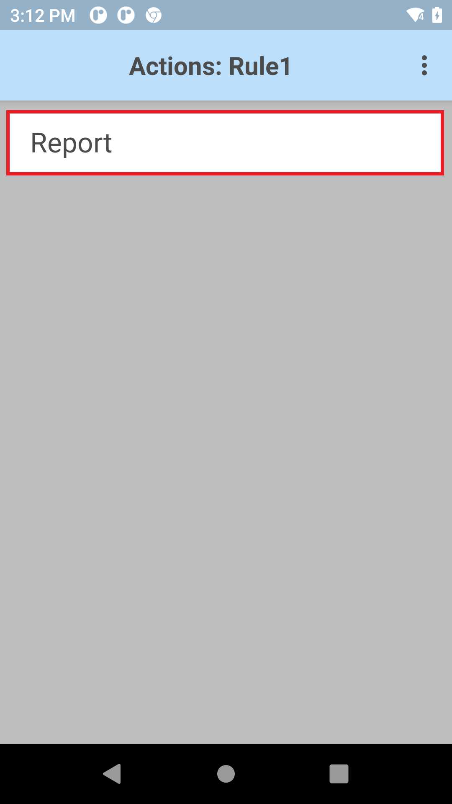
デコーダの選択
多くの入力方式には、組織で予想されるスキャン対象や優先選択に従って構成可能なパラメータが含まれます。デコーダの選択肢を絞り込めるようにすると、セキュリティが向上し、デコード エラーが減少し、スキャン性能が向上します。たとえば、Code 128 シンボル体系でエンコードされたパッケージを定期的に受信する企業では、実装する Code128 デコーダを非 EAN タイプのデコーダに制限することをお勧めします。
個々のデコーダのパラメータは、プロファイル内で変更されます。各 DataWedge プロファイルには、関連付けられたアプリケーションで使用する一意のデコーダ グループおよび (該当する場合は) デコーダ パラメータ グループを割り当てることができます。このガイドでは、デコーダの選択について取り上げ、また構成可能なパラメータを持つデコーダの詳細について説明します。
サポートされているデコーダおよびデコーダのパラメータについては、「デコーダ」を参照してください。
デフォルトのデコーダ
DataWedge では、すべての主要なバーコード シンボル体系がデコードされます。一般的な形式は、すべての DataWedge プロファイルでデフォルトで有効になっています (「*」で示されています)。スキャン性能を向上させるために、特定のプロファイルに関連付けられているアプリに必要のないすべてのデコーダを無効にすることをお勧めします。
注:
- 構成可能なパラメータがないデコーダは、「デコーダ パラメータ」セクションには表示されません。その他のデコーダは、対応するパラメータの説明にリンクされています。
- 「Australian Postal」または「Canadian Postal」のいずれかをデコーダとして選択してください。両方を選択してはなりません。両方を同時にデコーダとして選択した場合は、「Canadian Postal」バーコードのみがデコードされます。
Australian Postal |
Aztec* |
Canadian Postal |
Chinese 2of5 |
||
Code 32* |
||
Datamatrix* |
||
EAN-8* |
||
EAN-13* |
Finnish Postal 4S |
GS1 DataBar |
GS1 DataBar Limited |
GS1 DataBar Expanded |
|
Japanese Postal |
||
MacroPDF* |
MAILMARK |
|
Maxicode* |
MICR E13B |
|
MicroQR |
MacroMicroPDF* |
|
PDF417* |
||
QR Code* |
TLC 39* |
|
US Currency |
||
US Postal |
UPC-A* |
|
US4state FICS |
US4state |
* デフォルトで有効
注: ハイパーリンク付きのデコーダは、構成可能なパラメータであることを示し、リンク先が設定されています。
デコーダの有効化/無効化
デコーダを有効または無効にするには:
1.編集中のプロファイルで、[スキャナ設定の構成] をタップし、[デコーダ] をタップします (以下の図で強調表示されている部分を参照)。
手順 2 の図のようなデコーダのリストが表示されます。

2.対応するチェックボックスをオン/オフにして、目的のデコーダを選択/選択解除します。
注: 必須でないデコーダを減らすことで、スキャン性能を向上できます。
デコーダ パラメータの編集
デコーダ パラメータを編集するには:
1.編集中のプロファイルで、[デコーダ] をタップします。
以下の手順 2 の図のような、デコーダのリストが表示されます。
2.[デコーダ] リストで、デコーダをタップしてパラメータを編集します。
デコーダにパラメータがない場合は、デコーダを有効/無効にするためのチェックボックスが表示されます。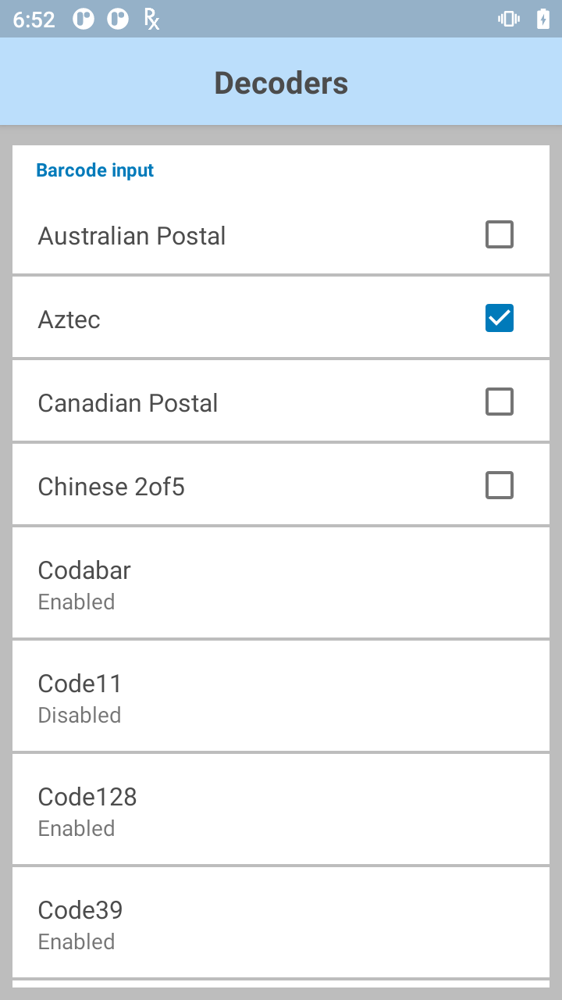
デコーダのパラメータ
個々のデコーダの編集可能なパラメータについて、この後で説明します。注: 構成可能なパラメータがないデコーダは、以下の「デコーダ パラメータ」セクションには表示されません。DataWedge プロファイルの作成と編集の詳細については、「プロファイルの管理」ガイドを参照してください。
サポートされているデコーダおよびデコーダのパラメータについては、「デコーダ」を参照してください。
縮小 Quiet Zone
クワイエット ゾーンとは、バーコードの両側にある空白の領域のことで、シンボル体系の開始位置と終了位置を示し、リーダーが無関係な情報をスキャンできないようにするためのものです。[縮小クワイエット ゾーン レベル] リーダー パラメータを指定してマージンレス デコーダを使用すると、デコーダは、次の表に従って動作します。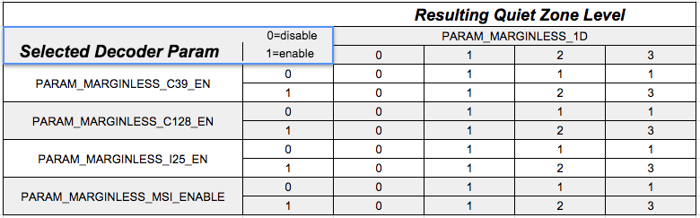上記の 1D クワイエット ゾーン レベルの説明は、「リーダー パラメータ」のセクションにあり、重要な警告も記載されています。
UPC/EAN パラメータ
UPC/EAN パラメータでは、複数の UPC または EAN デコーダに適用されるパラメータを構成できます。

DataBar - UPC EAN 変換 - 有効にすると、DataBar バーコードが UPC/EAN/JAN 形式に変換されます。この設定を機能させるには、UPC/EAN/JAN シンボル体系を有効にする必要があります。このパラメータは、Composite バーコードの一部として読み取られない GS1 DataBar Omnidirectional と GS1 DataBar Limited バーコードだけに適用されます。DataBar-14 および DataBar Limited バーコードから先頭の「010」を取り除き、1 つのゼロを最初の数字としてエンコードし、そのバーコードを EAN-13 として報告します。2 ～ 5 個のゼロで始まるバーコードの場合、先頭の「0100」を取り除き、バーコードを UPC-A として報告します。システム文字と国コードを転送する UPC-A プリアンブル オプションは、変換されたバーコードに適用されます。システム文字もチェック ディジットも取り除くことはできません。
UPC 縮小 Quiet Zone - 縮小 Quiet Zone (バーコードの前後の領域) がある UPC バーコードのデコードを有効/無効にします。このオプションを有効にすると、バーコードのデコードの強度が上がり、結果としてデコード時間が長くなり、デコードミスのリスクが高まります。
Bookland - 有効にするときは、以下のリストから Bookland 形式を選択します。
Bookland 形式 - Bookland が有効になっている場合、Bookland データに対して次の選択を行うことができます。
ISBN-10 形式 - スキャナは、後方互換性を保つために特殊な Bookland チェック ディジット付きの従来の 10 桁形式の、978 で始まる Bookland データをレポートします。979 で始まるデータは、このモードでは Bookland と見なされません。
ISBN-13 形式 - 2007 ISBN-13 プロトコル対応の 13 桁形式の Bookland データ (978 または 979 で始まる) を EAN-13 としてレポートします。
Coupon - Coupon コードのデコードを有効/無効にします。この機能を使用するには、UPC-A、EAN-13、および GS1-128 を有効にする必要があります。有効にすると、「5」で始まる UPC-A バーコード、「99」で始まる EAN-13 バーコード、および UPC-A/GS1-128 クーポン コードが読み取られます。
Coupon レポート モード - 従来のクーポン シンボルは、2 つのバーコードUPC/EAN/JAN と Code 128 で構成されます。新しいクーポン シンボルは、1 つの Data Expanded バーコードで構成されます。新しい形式では、さまざまな購入価格 (最大 999.99 ドル) を設定でき、セールなどの複雑な割引価格の設定にも対応することができます。2 種類のバーコードUPC/EAN/JAN と Databar Expanded を含む中間クーポン シンボルもあります。この形式は、新しいクーポン シンボルに含まれている追加情報を認識しない、または使用しない小売業者と、新しいクーポン シンボルを処理できる小売業者の両方に対応しています。
- 旧 Coupon レポート モード - UPC-A/Code-128 と EAN-13/Code-128 の両方がレポートされます。
- 新 Coupon レポート モード - 中間フォーマットをスキャンすると、UPC-A/GS1-DataBar と EAN-13/GS1-DataBar がレポートされます。
- 両 Coupon レポート モード - 旧 Coupon フォーマットと新 Coupon フォーマットの両方がレポートされます。
EAN ゼロ拡張 - 有効にすると、デコードされた EAN-8 バーコードの先頭に 5 つのゼロが追加され、その長さが EAN-13 バーコードに対応するようになります。
リニア デコード - リニア デコード プロパティを有効にします。
再試行回数 - サプリメンタルコード付き UPC/EAN/JAN を自動識別するための再試行回数で、転送前にサプリメンタルなしのバーコードを読み取る回数を調整します。値の範囲は 2 ～ 20 で、デフォルト値は 10 です。サプリメンタルの有無にかかわらず混在した UPC/EAN/JAN バーコードを読み取る場合は、5 以上の値を推奨します。サプリメンタル モードは次のいずれかに設定する必要があります。サプリメンタル自動、サプリメンタル スマート、サプリメンタル 378-379、サプリメンタル 978-979、サプリメンタル 977、またはサプリメンタル 414-419-434-439 (2 ～ 20)。
セキュリティ レベル - UPC/EAN/JAN バーコードに対して 4 種類のデコード セキュリティ レベルを設定できます。バーコード品質の低下に従い、セキュリティ レベルが上がり、デコードの成功が補償され、改善に役立ちます。スキャナの強度とセキュリティの間には、逆相関があります。特定のアプリケーションに必要なセキュリティ レベルを慎重に選択することをお勧めします。
レベル 0 - この設定では、スキャナが、最速で動作すると同時に、「仕様に準拠した」UPC/EAN/JAN バーコードのデコードにおいて十分なセキュリティを実現します。
レベル 1 - バーコード品質の低下に従い、特定の文字が他の文字 (1、2、7、8 など) よりも先にデコード エラーを発生しやすくなります。スキャナで印刷品質の低いバーコードによるデコード エラーが発生し、デコード エラーがこうした文字に限定される場合は、このセキュリティ レベルを選択します。
レベル 2 - スキャナで印刷品質の低いバーコードのデコードに失敗し、デコード エラーが 1、2、7、8 の文字に限定されない場合は、このセキュリティ レベルを選択します。
レベル 3 - スキャナがそれでもデコードに失敗する場合は、このセキュリティ レベルを選択します。このオプションの選択は、仕様から大きく外れたバーコードのデコード エラーに対する非常手段であることに注意してください。このセキュリティ レベルを選択すると、スキャナのデコード能力を大きく損なうおそれがあります。このレベルのセキュリティが必要な場合は、バーコードの品質改善を試みてください。
サプリメンタル 2 - 長さ 2 のサプリメンタルを有効/無効にします。
サプリメンタル 5 - 長さ 5 のサプリメンタルを有効/無効にします。
サプリメンタル モード - 以下のいずれかを選択します。
サプリメンタルなし - スキャナでUPC/EAN/JAN のみが読み取られ、サプリメンタル文字は無視されます。
サプリメンタル常時 - スキャナでサプリメンタル文字付きの UPC/EAN/JAN シンボルのみがデコードされ、サプリメンタルのないバーコードは無視されます。
サプリメンタル自動 - スキャナでサプリメンタル文字付きの UPC/EAN/JAN シンボルがただちにデコードされます。シンボルにサプリメンタルがない場合、スキャナは、サプリメンタルがないことを確認するために、UPC/EAN/JAN サプリメンタルの冗長性で設定された回数だけバーコードをデコードしてから、そのデータを送信します。
サプリメンタル スマート - スマート サプリメンタルを有効にします。このモードでは、デコーダは、デコードされた値が以下のいずれかのサプリメンタル タイプに属していない限り、メイン ブロックのそのデコードされた値をただちに返します。
◦ 378
◦ 379
◦ 977
◦ 978
◦ 979
◦ 414
◦ 419
◦ 434
◦ 439バーコードの前に上記のプリフィックスのいずれかが付いている場合は、画像でサプリメンタルをより積極的に検索し、そのスキャンを試みます。サプリメンタル スキャンが失敗した場合は、メイン バーコードのみが返されます。
サプリメンタル 378-379 - 先頭が 378 または 379 の UPC/EAN/JAN コードのサプリメンタルを有効 (自動識別) にします。先頭が 378 でも 379 でもない UPC/EAN/JAN バーコードのサプリメンタルの読み取りを無効にします。サプリメンタルがある場合は、スキャンを試みます。サプリメンタル スキャンが失敗した場合は、メイン バーコードのみが返されます。
サプリメンタル 978-979 - 先頭が 978 または 979 の UPC/EAN/JAN コードのサプリメンタルを有効 (自動識別) にします。先頭が 978 でも 979 でもない別の UPC/EAN/JAN バーコードのサプリメンタルの読み取りを無効にします。サプリメンタルがある場合は、スキャンを試みます。サプリメンタル スキャンに失敗した場合は、メイン バーコードのみが返されます。
サプリメンタル 414-419-434-439 - 先頭が 414、419、434 または 439 の UPC/EAN/JAN コードのサプリメンタルを有効 (自動識別) にします。先頭が 414、419、434、439 のいずれでもない別の UPC/EAN/JAN バーコードのサプリメンタルの読み取りを無効にします。サプリメンタルがある場合は、スキャンを試みます。サプリメンタル スキャンが失敗した場合は、メイン バーコードのみが返されます。
サプリメンタル 977 - 先頭が 977 の UPC/EAN/JAN コードのサプリメンタルを有効 (自動識別) にします。先頭が 977 でない別の UPC/EAN/JAN バーコードのサプリメンタルの読み取りを無効にします。サプリメンタルがある場合は、スキャンを試みます。サプリメンタル スキャンが失敗した場合は、メイン バーコードのみが返されます。
リーダー パラメータ
リーダー パラメータでは、編集するプロファイルで選択したバーコード リーダーの特定の構成オプションを設定します。すべてのパラメータが、どのリーダーにも適用されるわけではありません。

プレゼンテーション モード パラメータ - スキャン セッション中のスキャナの読み取り範囲内での動きに反応する感度レベルを設定し、動きが検出されたときにスキャナを自動的にアクティブにします。[エイム タイプ] に [プレゼンテーション モード] が選択されている場合に使用します。
- 感度 - 感度レベルを設定します。
- 高 - スキャナの読み取り範囲内での動きに対して、高い感度でスキャンがアクティブになります (デフォルト)。読み取り範囲内でのわずかな動きでスキャナがアクティブになります。
- 中 - スキャナの読み取り範囲内での動きに対して、中程度の感度でスキャンがアクティブになります。
- 低 - スキャナの読み取り範囲内での動きに対して、低い感度でスキャンがアクティブになります。読み取り範囲内での速い動きでは、スキャナはアクティブになりません。
1D クワイエット ゾーン レベル - デコーダが「マージンレス」バーコードのデコードを試行するにあたっての拡張レベルを設定します。これらのレベルの動作は、選択したマージンレス デコーダによって異なります。動作については、「縮小クワイエット ゾーン」の表を参照してください。
レベル 0 - 通常どおりのマージン デコードが実行されます。
レベル 1 - より強力なデコードが実行されます。
レベル 2 - バーコードの片側のみが必要です。
レベル 3 - 何でもデコードできます。
注: マージンレス レベルを高くすると、デコード時間が長くなり、デコード エラーのリスクが高まります。より高いマージンレス レベルを必要とするシンボル体系のみを有効にし、他のすべてのシンボル体系をデフォルト レベルの 1 のままにしておくことをお勧めします。
エイム モード - エイム パターンのオン/オフを切り替えます。
エイム タイマ - 時間指定モードの時間 (ミリ秒) を設定します。0 ～ 60,000 ms の範囲を 100 ms 単位でサポートします。
エイム タイプ - トリガを押したときのリーダーの動作を選択できるようにします。
トリガ - トリガを押すたびに、1 つのバーコードをスキャンできます。
時間指定継続 - 近接センサは、視野内で動くオブジェクトを検出します。物体が検知されると、スキャン エンジンが作動し、連続モードで動作します。読み取り範囲で検出されたバーコードはすべて読み取られます。スキャン エンジンは、読み取り範囲からオブジェクトを読み取ったり削除したりした後も、時間指定継続ビーム タイマ (以下の設定を参照) に達するまで、連続モードで動作し続けます。設定されたタイムアウト時間内に読み取りが行われない場合、スキャン エンジンがシャットダウンし、近接センサがアクティブになり、読み取り範囲内に別の物体があるかどうかを検出します。
時間指定ホールド - トリガを押すと、エイム タイマで指定した時間だけ、エイム セッションが開始されます。この時間が経過すると、デコード セッションが開始され、スキャン ビームが照射されます。デコード セッションは、ビーム タイマが期限切れになるか、あるいはトリガが解除されるか、またはバーコードがデコードされるまで、アクティブ状態を維持します。
時間指定リリース - トリガを押すと、エイム セッションが開始され、トリガが解除されるまで続行されます。トリガが解除されたときにエイム タイマが期限切れになると、ビーム タイマと同じ残り時間の間、またはバーコードがデコードされる間、スキャン ビームが照射された状態でデコード セッションが開始されます。
押してリリース - トリガを押してリリースすると、スキャン ビームが開始されます。デコード セッションは、ビーム タイマが期限切れになるか、バーコードがデコードされるまで、アクティブ状態を継続します。
プレゼンテーション - 読み取り範囲内でバーコードが検出されると、トリガを押さなくても、ただちにスキャナが自動的にアクティブになり、スキャンが開始されます。
連続読み取り - スキャン トリガを長押しすると、バーコードが連続的にスキャンされます。トリガをリリースするか、スキャナ ビームがタイムアウトになると、スキャンが停止します。同じバーコードを複数回スキャンできます。ソフト スキャン トリガなどでインテントを使用してスキャンする場合、START_SCANNING インテントは、STOP_SCANNING インテントを受信するまで、またはスキャナ ビームがタイムアウトになるまで、連続スキャンを実行します。Zebra RS507 Bluetooth リング スキャナではサポートされていません。
押して持続 - トリガが押されたときにスキャン ビームを開始し、ビーム タイマが終了するか、バーコードがデコードされるか、読み取りがキャンセルされるまで、デコード セッションを続行します。トリガをリリースしても、スキャン ビームは停止しません。これにより、後からデバイスのトリガ ボタンを押して、読み取りが予期せずキャンセルされることがなくなります。ビームがオンのときにトリガを押しても何も起こりません。TC57/TC77 および PS20 デバイスに接続された TC20/TC25 および RS6000/RS507 Bluetooth スキャナの内部イメージャに使用されます。
押して継続 - トリガを押すと、スキャン ビームが開始されます。その後、トリガを保持してもリリースしても、デコード セッションはアクティブのままで、ビーム タイマが終了するか、次回トリガを押してリリースするまでこの状態が保たれます。これにより、トリガ ボタンの早期摩耗を防げるとともに、デコード セッション中にハード トリガ ボタンを押し続けなくて済むようになります。
DPM イルミネーション制御 - DPM バーコードのイルミネーションを制御します。
- 直接イルミネーション - スキャナは、直接 (白色) イルミネーションのみを使用します。ドット ピーニング バーコードとの併用をお勧めします。最適な状態でデコードするにはパーツを 30 度傾けます。
- 間接イルミネーション - スキャナは赤色のイルミネーションのみを使用します。円筒や、湾曲した表面、粗い表面、ザラザラな表面、反射率の高い表面、または明らかに機械加工された表面には、レーザー エッチングされたバーコードとの併用をお勧めします。
- サイクル イルミネーション - スキャナは、直接イルミネーションと間接イルミネーションを交互に切り替えます。最後に正常にデコードされたときに使用されたイルミネーションから開始されます。
DPM モード - バーコードのサイズに基づいて DPM バーコードのデコード性能を最適化するモード (デフォルト値は「モード 2」):
- 無効 - 特別な処理はありません。
- DPM モード 1 - 電子機器や医療機器など、特に滑らかな表面にある、小さな DPM バーコードのデコード性能を最適化します。多くの場合、こうしたバーコードは、レーザー エッチングまたは直接印字されています。
- DPM モード 2 - 工業用部品など、特に粗い表面、ザラザラな表面、または明らかに機械加工された表面にある、大きな DPM バーコードのデコード性能を最適化します。多くの場合、こうしたバーコードは、ドット ピーニングまたはレーザー エッチングされています。
イルミネーション輝度 - スキャン セッションの輝度を調整します。整数値: 0 ～ 10。
- 低 (0) - スキャン セッション中は低輝度イルミネーション。
- 高 (10) - スキャン セッション中は最大輝度イルミネーション (デフォルト)。
イルミネーション モード - イルミネーションのオン/オフを切り替えます。
反転 1D モード - 反転 1D バーコード デコード用のオプションを選択できます。
無効化 - 反転 1D シンボル体系のデコードを無効にします。
有効化 - 反転 1D シンボル体系のデコードのみを有効にします。
自動 - 標準および反転の 1D シンボル体系を自動的に検出してデコードします。
LCD モード - LCD モードを有効/無効にするのに使用します。これにより、イメージャが携帯電話などの LCD ディスプレイからバーコードを読み取る機能が強化されます (スキャン モジュールにのみ使用されます)。LCD モードを使用すると、デコード前に性能が低下したり、レチクルが点滅することがあります。
リニア セキュリティ レベル - 正確なデコードを確認するために、バーコードを読み取る回数を設定します。
セキュリティ冗長性と長さ - 冗長性フラグとコード長に基づいた 2 回の読み取り冗長性。
セキュリティ Short/Codabar - 短いバーコードまたは Codabar の場合の 2 回の読み取り冗長性。
セキュリティ全 2 回 - すべてのバーコードで 2 回の読み取り冗長性。
セキュリティ Long + Short - 長いバーコードで 2 回、短いバーコードで 3 回の読み取り冗長性。
セキュリティ全 3 回 - すべてのバーコードで 3 回の読み取り冗長性。
HW エンジン低出力タイムアウト - スキャナが低出力モードになるまでの非アクティブ時間 (ミリ秒)。
選択リスト - 選択リスト モードを選択できます。このモードでは、イメージャが、プレビュー画面の十字線/レチクルの直下にあるバーコードのみをデコードするように指示します。この機能は、デコード セッション中に複数のバーコードが読み取り範囲に表示されても、デコード対象のバーコードは 1 つだけであるアプリケーションに最も役立ちます。
無効化 - 選択リスト モードを無効にします。読み取り範囲内のすべてのバーコードをデコードできます。
ハードウェア選択リスト - 選択リスト モードは、ハードウェアにコマンドを送信することで有効になります。8y6
ソフトウェア選択リスト - 選択リスト機能がソフトウェアで処理され、コマンドはハードウェアに送信されません。
注:
- [ハードウェア選択リスト] モードまたは [ソフトウェア選択リスト] モードが設定されている場合、一部のデバイスでは性能が異なることがあります。
- [マルチバーコード] モードを使用している場合は、動作に関する以下の重要な注意事項を参照してください。
低品質画像デコード拡張を許可 - 低品質または劣化品質のバーコードをデコードする拡張モードを選択できます。使用可能なオプション:
拡張レベル 0 - 通常の 1D および 2D バーコードのデコード性能には影響しません。
拡張レベル 1 - 通常の 2D バーコードのスキャナ性能は劣化しますが、Tesco Thailand バーコードおよび Suppository バーコードのデコード性能は向上します。
拡張レベル 2 - レベル 1 と同じ。
拡張レベル 3 - レベル 1 と同じ。
注: 拡張レベル 1 から拡張レベル 3 まで性能は同じです。
ビーム タイマ - リーダーがオンのままになる最大時間 (ミリ秒) を設定します。0 ～ 60,000 ms の範囲を 100 ms 単位でサポートします。値が 0 の場合、リーダーは無期限でオンになります。
時間指定継続ビーム タイマ - (時間指定連続エイム タイプに関連します)スキャン セッションがタイムアウトするまでアクティブな状態を保つ時間 (ミリ秒単位) を設定します。0 ～ 180,000 ms の範囲を 1000 ms 単位でサポートします。値が 0 の場合、リーダーは無期限で連続モードに設定されます。
異なるシンボルのタイムアウト - 指定した時間内にスキャナが別のシンボルをデコードできないようにするのに使用します ([エイム タイプ] が [連続読み取り] に設定されている場合にのみ適用できます)。0 の値は、2 つの連続した読み取りの間に間隔が必要ないことを示します。
同じシンボルのタイムアウト - 指定した時間内にスキャナが同じシンボルをデコードできないようにするのに使用します ([エイム タイプ] が [連続読み取り] に設定されている場合にのみ適用できます)。0 の値は、2 つの連続した読み取りの間に間隔が必要ないことを示します。
トリガ ウェイクアップ & スキャン - デバイスがサスペンド/画面オフ状態のときにスキャンをトリガするのに使用します。スキャナのトリガ ボタンをウェイクアップ ソースとして設定する必要があります。サスペンド/画面オフ状態でトリガ ボタンを押して、トリガを押し続けるとスキャンが開始されます。
Digimarc デコード - 従来のバーコード データをエンコードして、目に見えない形で製品パッケージに埋め込む Digimarc のサポートを有効/無効にするのに使用されます。内部イメージャおよび背面カメラでサポートされています。デフォルトで有効になっています。詳細については、Digimarc 社のサイトを参照してください。
ビューファインダ モード - サポートされているビューファインダ モードを選択できます。
ビューファインダの有効化 - ビューファインダのみを有効にします。
静的レチクル - スキャンするバーコードの位置決めに役立つように、画面中央のビューファインダと赤いレチクル (十字線) を有効にします。このパラメータは、カメラがスキャンに使用されている場合にのみサポートされます。
ズーム - DotCode バーコードのデコードに必要です。カメラのズームの値を 2 に設定する必要があるのは、MC33、TC51/TC56、TC70x/TC75x、VC80x、TC52/TC57、TC72/TC77、PS20 の各デバイスです。これらのデバイスでカメラのズームが 2 以外の値に設定されている場合、特定の DotCode バーコードのデコードに悪影響を与えるおそれがあります。パラメータ値: 1 ～ 8。デフォルト = 1。
リブート後にペアリング情報を維持 - デバイス リブート後の接続済み Bluetooth スキャナへの自動再接続を有効/無効にします。接続済み Bluetooth スキャナにのみ使用されます。
以下の「重要」を参照してください。
文字セット構成
デコーダの文字セットを調整するオプションが用意されています。オプションは、次のとおりです。
- 文字セット選択
- 自動文字セット優先順序
- 自動文字セット障害オプション
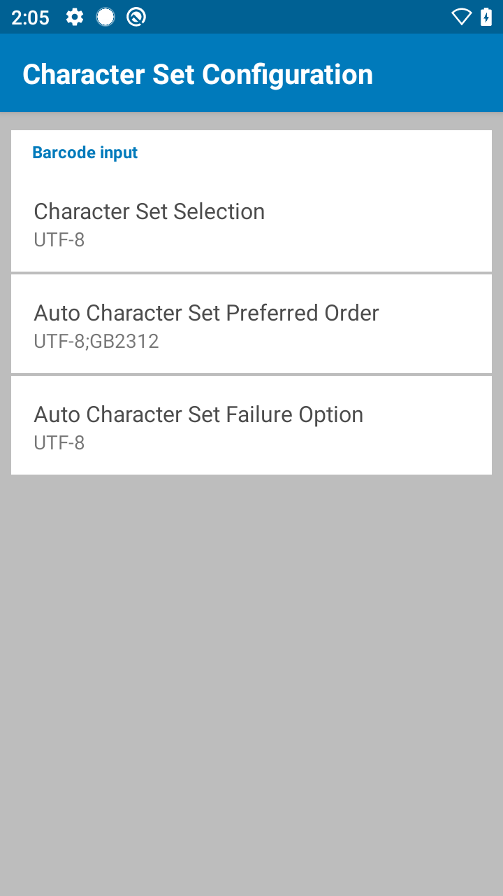
文字セット選択 - デフォルトのエンコード タイプ UTF-8 と異なる場合、バーコード データを、指定したエンコード タイプに変換します。その他のオプションには、自動文字セット選択、ISO-8859-1、Shift_JIS、および GB18030 があります。
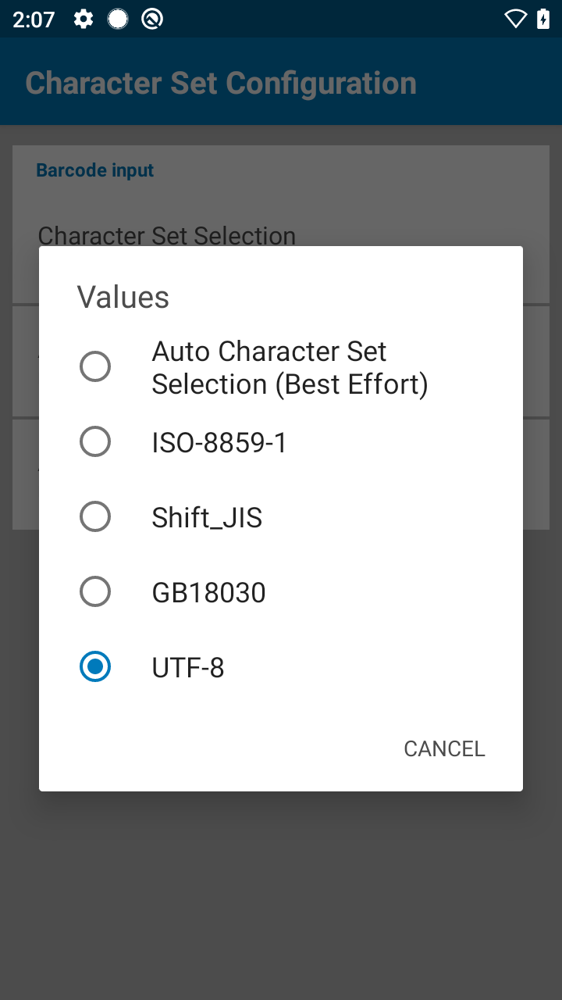
- 自動文字セット選択 (最適な方法) - [自動文字セット優先順序] リストに指定されている文字セットの優先順序でデータをデコードします。リストされている文字セットに基づいてデータをデコードできない場合は、[自動文字セット障害オプション] が有効になります。詳細については、それぞれのオプションの説明を参照してください。
自動文字セット優先順序 - [自動文字セット選択 (最適な方法)] が選択されている場合、データは、リストにあるサポートされている文字セットUTF-8 と GB2312 の指定された優先順序でデコードされます。これは、データを複数の文字セットからデコードできる場合に役立ちます。データを正常にデコードできる、リストにある最初の文字セットが、データをデコードするために選択されます。リストの下位にある他の文字セットは、その文字セットを使用してデータを正常にデコードできたとしても考慮されません。データを正常にデコードするための文字セットが優先リストで見つからない場合は、[自動文字セット障害オプション] で選択した文字セットが、データのデコードに使用されます。
優先文字セット リストとその優先順序の両方を構成できます。順序を変更するには、文字セットの「3 本線」アイコンを目的の位置にドラッグします。文字セットを削除するには、項目を長押しして、[削除] オプションを表示します。新しい文字セットを追加するには、右上の「3 本線」メニューをタップします。UTF-8 や GB2312 などの文字セットを追加するオプションが表示されます。

自動文字セット障害オプション - デバイスが、[自動文字セット優先順序] リストにある文字セットに基づいて正しくデコードできない場合にデータをデコードするのに使用されます。[なし] を選択すると、データ文字列として「Null」が返されます。
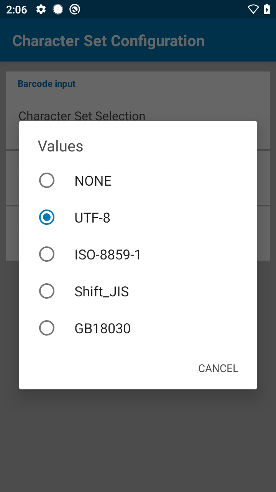
スキャン パラメータ
スキャン パラメータを使用すると、編集するプロファイルで選択したスキャナのコード ID およびスキャナ固有のデコード フィードバック オプションを設定できます。
注: 一部のパラメータはデバイスに依存します。
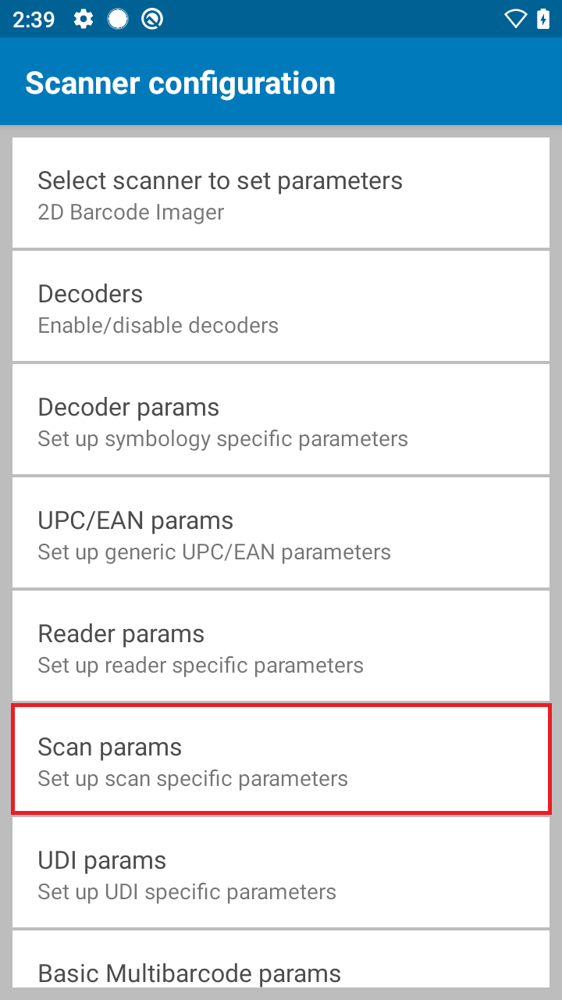
コード ID タイプ - プリフィックスとデコードしたシンボルの間に挿入するコード ID 文字を選択できます。コード ID 文字で、スキャンしたバーコードのコード タイプを識別します。この情報は、複数のバーコード タイプを読み取っている場合にアプリケーションで役立ちます。使用可能なオプション:
コード ID タイプなし - プレフィックスを挿入しません。
コード ID タイプ - エイム - 標準ベースの 3 文字プリフィックスを挿入します。
コード ID タイプ - シンボル - Zebra が定義した 1 文字プリフィックスを挿入します。
接続アイドル時間 - 周辺機器の Bluetooth スキャナが、バッテリ電力を節約するためにスタンバイモードに移行するまでの、接続が維持される時間 (秒) を指定します。
デコード完了のハプティック フィードバック - デコードが成功したことを示すために、モバイル コンピュータが振動するようにします。Android 13 デバイスでは、 デバイスの [Settings] (設定) の [Vibration & haptics] (バイブレーションと触覚) で [Touch Feedback] (タッチ フィードバック) を有効にしないと、[Decode Haptic Feedback] (タッチ フィードバックのデコード) が機能しません。
BT アドレス バーコードの表示 - 有効な場合 (デフォルト) で選択した Bluetooth スキャナがモバイル コンピュータに接続されていないときにアクセスされている場合、モバイル コンピュータの Bluetooth アドレスは、Bluetooth ペアリング ユーティリティを使用して表示され、Bluetooth スキャナでスキャンしてペアリングできます。Bluetooth アドレスが表示されないようにするには、このオプションを無効にします。
デコード完了の音声フィードバック - デコードに成功したことを示すために再生する音を選択します。
デコード完了の画面通知 - 有効にすると、デコードが成功するたびに半透明の緑色の画面オーバーレイが 1 秒間表示されます。
デコード完了の画面通知タイマ - デコードが成功したときに画面通知を表示する時間 (ミリ秒) を定義します。タイマの構成範囲は 500ms ～ 1500ms です。デフォルトの時間は 1000ms です。
デコード通知の画面透過度レベル - デコード通知の緑色の画面の透過度を設定します。透過度レベルの範囲は 20 ～ 50 であり、5 刻みで指定します。値が大きいほど、透過度 (可視性) が高くなります。
デコーディングの LED 通知 - 有効にすると、スキャン トリガが押されたときに、赤色 LED が点滅します。
デコード フィードバック LED タイマ - デコードが成功したことを示すために、緑色 LED を点滅させる時間 (ミリ秒) を定義します。
ビープ音量チャンネル - [デコード完了の音声フィードバック] の再生時に使用する音量設定を選択できます。使用可能なオプション:
ベル音 - 音声フィードバックに [ベル音] 音量設定を使用します。
音楽 & メディア - 音声フィードバックに備えて、音楽とメディアの音量設定を使用します。
アラーム - 音声フィードバックに備えて、アラームの音量設定を使用します。
通知 - 音声フィードバックに [通知] 音量設定を使用します。
注: すべての着信音がデコード音としてサポートされているわけではありません。デコード音として使用すると、一部の着信音は切り捨てられることがあります。展開前に、選択したすべての音をテストすることをお勧めします。
重要: デコード パラメータのサポートは、選択したスキャン デバイスによって異なります。デバイス固有のサポートに関する注記については、ユニットに付属のインテグレータ ガイドを参照してください。
UDI パラメータ
機器固有識別子 (UDI) パラメータでは、複数のバーコードを同時に取得します。
UDI バーコードのサポートは、BSP 10.12.13「Update 17」以降を搭載した Android 10 を実行している Zebra デバイスで復活しました。
UDI のデコードを有効にするには、[スキャナ構成] の [スキャン モード] をタップします。
UDI スキャン モードを有効にすると (上図)... ...選択した UDI 入力パラメータが使用されます。
...選択した UDI 入力パラメータが使用されます。
UDI のデコードに関する注記:
- 収集した UDI データを出力するには、トークン区切り文字や出力順序の設定調整が必要になる場合があります。詳細については、「キーストローク出力」ガイドを参照してください。
- UDI 設定は、地域によって異なる場合があります。詳細については、「キーストローク出力」ガイド、「インテント出力」」ガイド、「IP 出力」ガイドの関連セクションを参照してください。
- ICCBBA 標準に準拠したバーコードが付いた血液バッグは、UDI でデコードできます。
OCR パラメータ
光学文字認識 (OCR) により、画像からデジタル テキストを抽出できます。OCR パラメータは、有効になっている場合、OCR A および/または OCR B デコーダに適用されます。OCR A と OCR B は大文字のみをサポートし、小文字はサポートしません。OCR のデコードは、バーコードほど確実ではありません。OCR のデコードミスを減らして OCR 読み取りを高速化するには、正確な OCR テンプレートと文字サブセットを設定し、チェック ディジットを使用します。OCR を有効にすると、バーコードのデコードが遅くなることがあります。複数の OCR フォントを有効にすると、OCR デコードが遅くなり、OCR デコード精度が低下するおそれがあります。
OCR は、内蔵イメージャ (TC52、TC57、TC72、TC77 など) を搭載したすべての Zebra SDM660 プラットフォーム デバイスでサポートされています。OCR は、カメラ専用デバイス、Bluetooth スキャナ、SE965 ベースのデバイス （MC3300 や MC9300 など)、Zebra Scanner Expansion Back (Zback)、内蔵スキャナを搭載した ET51 ではサポートされていません。
反転 OCR - 黒色または暗色の背景に白色または明色の文字で出力されます。反転 OCR のデコードのオプションを選択します。
- レギュラーのみ - 標準 OCR (白地に黒) 文字列のみをデコードします。
- 反転のみ - 反転 OCR (黒地に白) 文字列のみをデコードします。
- 自動識別 - 標準と反転の両方の OCR 文字列をデコードします。
OCR チェック ディジット係数 - OCR モジュールのチェック ディジットの計算を設定します。チェック ディジットとは、OCR 文字列の最後の数字 (右端) のことで、収集したデータの精度を高めるものです。チェック ディジットは、着信データに対して行われた計算結果です。チェック ディジットの計算 (モジュラス 10 など) では、英文字と数字に数値の重みが割り当てられます。計算は文字の重みに適用され、結果のチェック ディジットがデータの最後に追加されます。着信データがチェック ディジットに一致しない場合、そのデータは破損していると考えられます。選択したチェック ディジット オプションは、[OCR チェック ディジット検証] を設定するまで有効になりません。
OCR チェック ディジット乗数 - 文字位置に対する OCR チェック ディジット乗数を設定します。チェック ディジットの検証では、スキャンしたデータ内の各文字の重みは、チェック ディジットの計算で使用される重みと同じです。
OCR チェック ディジット検証 - OCR チェック ディジット検証スキームを適用することで、スキャン エラーを防ぎます。オプション:
- なし - 0 (デフォルト)
- 積の加算 (左から右) - スキャンしたデータの各文字に数値が割り当てられます。スキャンしたデータの文字を表す各数値は、乗数の対応する数値で乗算され、それぞれの積の合計が算出されます。この合計モジュロであるチェック ディジット係数がゼロの場合、チェック ディジットは合格です。
例: スキャンしたデータの数値が 132456 (チェック ディジットは 6) とします。チェック ディジット乗数文字列は 123456 です。
数値 1 3 2 4 5 6
乗数 1 2 3 4 5 6
積 1 6 6 16 25 36
積の加算 1+ 6+ 6+ 16+ 25+ 36 = 90
チェック ディジット係数が 10 の場合、90 は 10 で割り切れる (余りがゼロ) ため合格です。 - 積の加算 (右から左) - スキャンしたデータの各文字に数値が割り当てられます。チェック ディジット乗数は、順序が逆になります。スキャンしたデータの文字を表す各値は、順序が逆になった乗数の対応する数値で乗算され、スキャンしたデータの各文字の積が得られます。これらの積の合計が算出されます。この合計モジュロであるチェック ディジット係数がゼロの場合、チェック ディジットは合格です。例: スキャンしたデータの数値が 132459 (チェック ディジットは 9) とします。チェック ディジット乗数文字列は 123456 です。
数値 1 3 2 4 5 9
乗数 6 5 4 3 2 1
積 6 15 8 12 10 9
積の加算 6+ 15+ 8+ 12+ 10+ 9 = 60
チェック ディジット係数が 10 の場合、60 は 10 で割り切れる (余りがゼロ) ため合格です。 - 桁の加算 (左から右) - スキャンしたデータの各文字に数値が割り当てられます。スキャンしたデータの文字を表す各値は、乗数の対応する数値で乗算され、スキャンしたデータの各文字の積が得られます。次に、すべての積の各桁の合計が算出されます。この合計モジュロであるチェック ディジット係数がゼロの場合、チェック ディジットは合格です。
例: スキャンしたデータの数値が 132456 (チェック ディジットは 6) とします。チェック ディジット乗数文字列は 123456 です。
数値 1 3 2 4 5 6
乗数 1 2 3 4 5 6
積 1 6 6 16 25 36
桁の加算 1+ 6+ 6+ 1+6+ 2+5+ 3+6 = 36
チェック ディジット係数が 12 の場合、36 は 12 で割り切れる (余りがゼロ) ため合格です。 - 桁の加算 (右から左) - スキャンしたデータの各文字に数値が割り当てられます。チェック ディジット乗数は、順序が逆になります。スキャンしたデータの文字を表す各値は、順序が逆になった乗数の対応する数値で乗算され、スキャンしたデータの各文字の積が得られます。次に、すべての積の各桁の合計が算出されます。この合計モジュロであるチェック ディジット係数がゼロの場合、チェック ディジットは合格です。
例: スキャンしたデータの数値が 132456 (チェック ディジットは 6) とします。チェック ディジット乗数文字列は 123456 です。
数値 1 3 2 4 5 6
乗数 6 5 4 3 2 1
積 6 15 8 12 10 6
桁の加算 6+ 1+5+ 8+ 1+2+ 1+0+ 6 = 30
チェック ディジット係数は 10 です。30 は 10 で割り切れる (余りがゼロ) ため合格です。 - 積の加算 (右から左) Simple Remainder - スキャンしたデータの各文字に数値が割り当てられます。チェック ディジット乗数は、順序が逆になります。スキャンしたデータの文字を表す各値は、順序が逆になった乗数の対応する数値で乗算され、スキャンしたデータの各文字の積が得られます。チェック ディジットの積を除くそれぞれの積の合計が算出されます。この合計モジュロであるチェック ディジット係数がチェック ディジットの積と等しい場合、チェック ディジットは合格です。
例: スキャンしたデータの数値が 122456 (チェック ディジットは 6) とします。チェック ディジット乗数文字列は 123456 です。
数値 1 2 2 4 5 6
乗数 6 5 4 3 2 1
積 6 10 8 12 10 6
積の加算 6+ 10+ 8+ 12+ 10 = 46 6
チェック ディジット係数は 10 です。46 を 10 で割ると余りは 6 なので合格です。 - 桁の加算 (右から左) Simple Remainder - スキャンしたデータの各文字に数値が割り当てられます。チェック ディジット乗数は、順序が逆になります。スキャンしたデータの文字を表す各値は、順序が逆になった乗数の対応する数値で乗算され、スキャンしたデータの各文字の積が得られます。次に、"チェック ディジットの積を除く" すべての積の各桁の合計が計算されます。この合計モジュロであるチェック ディジット係数がチェック ディジットの積と等しい場合、チェック ディジットは合格です。
例: スキャンしたデータの数値が 122459 (チェック ディジットは 6) とします。チェック ディジット乗数文字列は 123456 です。
数値 1 2 2 4 5 9
乗数 6 5 4 3 2 1
積 6 10 8 12 10 9
桁の加算 6+ 1+0+ 8+ 1+2+ 1+0+ = 19 9
チェック ディジット係数は 10 です。19 を 10 で割ると余りは 9 なので合格です。 - 医療産業 - HIBCC43 - 医療産業 module 43 チェック ディジット標準です。チェック ディジットは、特定のメッセージのすべての文字値のモジュラス 43 の合計であり、特定のメッセージの最後の文字として印刷されます。
OCR ライン - デコードする OCR の行数を選択します。
- 1 行
- 2 行
- 3 行
OCR 最大文字 - デコードする OCR 文字 (スペースを含む) の 1 行あたりの最大数を選択します。
OCR 最小文字 - デコードする OCR 文字 (スペースは含まない) の 1 行あたりの最小数を選択します。
OCR 方向 - デコードする OCR 文字列の方向を選択します。方向を正しく設定しないと、デコードミスが発生するおそれがあります。オプション:
- 画像処理エンジンに対して 0 度 (デフォルト)
- 画像処理エンジンに対して 270 度時計回り (または 90 度反時計回り)
- 画像処理エンジンに対して 180 度 (上下逆)
- 画像処理エンジンに対して 90 度時計回り
- 全方向
OCR クワイエット ゾーン - OCR 読み取り中にスキャンを停止する空白スペースのフィールド幅を設定します。
OCR サブセット - 現在のフォント バリエーションの代わりに固有の文字グループを定義します。たとえば、数字と文字 A、B、C のみを読み取る場合は、デコードを速めるためにこれらの文字のみのサブセットを作成します。これにより、有効なすべての OCR フォントに、指定された OCR サブセットが適用されます。
OCR テンプレート - スキャンした OCR 文字を目的の入力形式に正確に一致させるためのテンプレートを作成します。これにより、スキャン エラーを排除できます。テンプレートは、アルファベット、数字、特殊文字で構成されています。デフォルトは 99999999 で、「9」は各文字の数字を表しています。下の表を参照してください。この表では、[テンプレート] 列には [名前] 列に基づいて表される文字で構成される OCR テンプレートが含まれています。各文字には特定の表現があります。OCR テンプレートを慎重に構成することで、スキャン エラーがなくなります。
最小長 -3
最大長 - 100 (デフォルト - 99999999)
OCR テンプレートとオプション:
| 名前 | 説明 | テンプレート | 有効なデータ/ 着信データ |
無効なデータ/ 送信データ |
|---|---|---|---|---|
| 必要な数字 (9) | この位置には数字のみが許可されます。 | 99999 | 12987 | 123AB |
| 必要な英文字 (A) | この位置には英文字のみが許可されます。 | AAA | ABC | 12F |
| 必須と抑制 (0) | この位置にあるあらゆる文字 (スペースやリジェクトを含む) が出力から抑制されます。 | 990AA | 12QAB | 12AB |
| オプションの英数字 (1) | このオプションは、英数字がある場合はそれを受け入れます。オプションの文字は、同様の文字フィールドの最初の文字として許可されていません。 | 99991 | 1234A | 1234< |
| オプションの英文字 (2) | このオプションは、英文字がある場合はそれを受け入れます。オプションの文字は、同様の文字フィールドの最初の文字として許可されていません。 | AAAA2 | ABCDE | ABCD6 |
| 英文字または数字 (3) | 着信データを検証するには、この位置に英数字が必要です。 | 33333 | 12ABC | 12AB< |
| スペースとリジェクトを含むあらゆる文字 (4) | スペースとリジェクトを含め、この位置にあるあらゆる文字を受け入れます。出力では、リジェクトはアンダースコア (_) として表されます。これは、トラブルシューティングに適しています。 | 99499 | 12$34 34_98 |
|
| スペースとリジェクトを除くあらゆる文字 (5) | スペースとリジェクトを除く、この位置にあるあらゆる文字を受け入れます。 | 55999 | A.123 *Z456 |
A BCD |
| オプションの数字 (7) | 数字がある場合は、それを受け入れます。オプションの文字は、同様の文字フィールドの最初の文字として許可されていません。 | 99977 | 12345 789 |
789AB |
| 数字または充填文字 (8) | この位置にあるあらゆる数字または充填文字を受け入れます。 | 88899 | 12345 >>789 <<789 |
|
| 英文字または充填文字 (F) | この位置にあるあらゆる英文字または充填文字を受け入れます。 | AAAFF | ABCXY LMN>> ABC<5 |
|
| オプションのスペース ( ) | スペースがある場合は、それを受け入れます。オプションの文字は、同様の文字フィールドの最初の文字として許可されていません。 | 99 99 | 12 34 1234 |
67891 |
| オプションの小さい特殊文字 (.) | 特殊文字がある場合は、それを受け入れます。オプションの文字は、同様の文字フィールドの最初の文字として許可されていません。小さい特殊文字は、「-」、「,」、および「.」です。 | AA.99 | MN.35 XY98 |
XYZ12 |
| その他のテンプレート演算子 - これらのテンプレート演算子は、スキャンした OCR データのキャプチャ、区切り、および形式化に役立ちます | ||||
| リテラル文字列 (" および +) | 英数字を囲むこれらの区切り文字のいずれかを使用して、スキャンした OCR データに存在している必要があるリテラル文字列をテンプレート内に定義します。必要なリテラル文字列を区切るための文字は 2 つあります。目的のリテラル文字列にいずれかの区切り文字がある場合は、もう一方の区切り文字を使用します。 | "35+BC" | 35+BC | AB+22 |
| 改行 (E) | 複数行のテンプレートを作成するには、各単一行のテンプレートの間に E を追加します。 | 999EAAAA | 321 BCAD |
XYZW 12 |
| 文字列抽出 (C) | この演算子を他の演算子と組み合わせると、スキャンしたデータから抽出する文字列を定義できます。文字列抽出は、次のような構造になっています。 CbPe 各文字の意味は、以下のとおりです。 • C は文字列抽出演算子 • b は文字列開始区切り文字 • P は文字列表現を表しているカテゴリ (1 つ以上の数字または英文字) • e は文字列終了区切り文字 bとeの値は、スキャン可能な任意の文字にすることができます。これらは出力ストリームに含まれます。 |
C>A> | XQ3>ABCDE> ->ATRU>123 |
>ABCDE> >ATRU> |
| フィールドの終わりまで無視 (D) | この演算子を使用すると、テンプレートの後のすべての文字が無視されます。これは、テンプレートの最後の文字として使用します。 | 999D | 123-PED 357298 |
123 357 |
| そこまでスキップ (P1) | この演算子により、特定の文字タイプまたはリテラル文字列が検出されるまで文字をスキップできます。次の 2 つの方法で使用できます。 P1ct 各文字の意味は、以下のとおりです。 •P1 は「そこまでスキップ」演算子 • c は出力の開始をトリガする文字のタイプ • t は 1 つ以上のテンプレート文字 P1"s"t 各文字の意味は、以下のとおりです。 •P1 は「そこまでスキップ」演算子 • "s" は、出力の開始をトリガする 1 つ以上のリテラル文字列 • t は 1 つ以上のテンプレート文字 トリガ文字またはリテラル文字列は、「そこまでスキップ」演算子の出力に含まれ、テンプレートの最初の文字がこのトリガに対応している必要があります。 |
P1"PN"AA9999 | 123PN9876 X-PN3592 |
PN9876 PN3592 |
| 該当しなくなるまでスキップ (P0) | この演算子により、特定の文字タイプまたはリテラル文字列が出力ストリームで一致しなくなるまで文字をスキップできます。次の 2 つの方法で使用できます。 P0ct 各文字の意味は、以下のとおりです。 •P0 は「該当しなくなるまでスキップ」演算子 • c は出力の開始をトリガする文字のタイプ • t は 1 つ以上のテンプレート文字 P0"s"t 各文字の意味は、以下のとおりです。 •P0 は「該当しなくなるまでスキップ」演算子 • "s" は、出力の開始をトリガする 1 つ以上のリテラル文字列 • t は 1 つ以上のテンプレート文字 トリガ文字またはリテラル文字列は、「該当しなくなるまでスキップ」演算子の出力に含まれます。 |
P0A9999 | BPN3456 X-PN3592 |
5341 出力なし |
| 前を繰り返す (R) | この演算子により、テンプレート文字を 1 回または複数回繰り返すことができ、可変長のスキャン データをキャプチャできるようになります。次の例では、2 つの必須の英文字と、それに続く 1 つ以上の必須の数字をキャプチャします。 | AA9R | AB3 AB3 32RM52700 |
PN12345 PN12345 出力なし |
| 一致するまでスクロール (S) | この演算子は、データがテンプレートと一致するまで、スキャンしたデータを 1 文字ずつ順番に参照します。 | S99999 | AB3 PN12345 32RM52700 |
出力なし 12345 52700 |
| 複数のテンプレート | この機能では、OCR デコード用の複数のテンプレートを設定します。複数のテンプレート文字列に含まれているテンプレートごとに、テンプレート間のセパレータとして大文字の X を使用します。 たとえば、OCR テンプレートを 99999XAAAAA と設定して、12345 または ABCDE の OCR 文字列をデコードします。 |
以下に、テンプレートの例と、各定義の有効なデータの説明を示します。フィールド定義の後に説明を示します。 "M"99977 : M の後に 3 つの数字と 2 つのオプションの数字。 "X"997777"X" : X の後に 2 つの数字、4 つのオプションの数字、X。 9959775599 : 2 つの数字の後に任意の文字、1 つの数字、2 つのオプションの数字、任意の 2 つの文字、2 つの数字。 A55"-"999"-"99 : 文字の後に 2 つの文字、1 つのハイフン、3 つの数字、1 つのハイフン、2 つの数字。 33A"."99 : 2 つの英数字の後に 1 つの文字、1 つのピリオド、2 つの数字。 999992991 : 5 つ数字の後に 1 つのオプションの英文字、2 つの数字、1 つのオプションの英数字。 "PN98" : リテラル フィールド - PN98 |
||
関連ガイド: